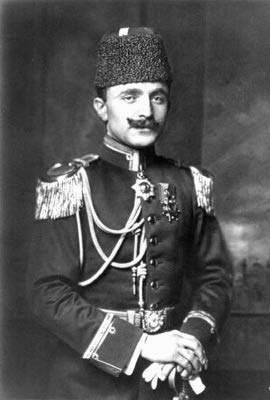

Kendisine hitap edildiği zaman bir genç kız gibi göğsüne kadar kızaran narin bir delikanlı, güzel, şirin. Tam manasıyla yakışıklı. Yüzünün hatları, son derecede düzgün. Bu sevimli çehrenin en kuvvetli tarafı, bilhassa gözleri. Bu gözler biraz sert ve haşin olmakla beraber, bakanların kalbini derhal büyüleyecek kadar sehhar (sihirli). Az konuşur. Az güler. Fakat abus (somurtkan) değil, umumi heyeti ve jestleri, ilk nazarda mağrur ve azametli gibi göründüğü halde, Bilâkis mütevazi. Hatta kendini göstermekten bile muhteriz (çekingen) ve müctenip. Bir daha tekrar edelim, o devrin tabiriyle, kız gibi bir delikanlı…
Kim der ki bu mahcup delikanlı, 1914 Cihan Harbi’nin en büyük kahramanlarından olacak ve Osmanlı İmparatorluğunun taçsız hükümdar mevkiine kadar çıkacak.
Çok zeki ve çalışkan olduğu için, Harbiye Mektebinden parlak bir erkân harp yüzbaşısı olarak çıkmasına kimse hayret etmedi. Fakat o tarihte kan ve ateş içinde kaynayan 3. ordu Mıntıkasına memur edildiği zaman onu yakından bilenleri:
— Yazık oldu çocuğa… Bu, Rumeli’ye gidecekti, o canavar gibi Bulgar çeteleriyle nasıl mücadeleye girişecek, dediler.
Fakat o, Manastır’a gidip de o kanlı mücadele sahasına atılır atılmaz:
— Aşk olsun, Enver’e… Hiç de umduğumuz gibi çıkmadı, demek mecburiyetini hissettiler.
Bunda da haksız değildiler. Çünkü birkaç arkadaşının arasında söz söylerken göğsüne kadar kızaran o kız gibi delikanlı, kanlı Balkanlarda Bulgar eşkıyalarını avlamaya çıktığı zaman tığ gibi bir genç zabit oluyor, burnuna barut kokusu girer girmez, derhal değişiyor. Gösterdiği harikulade cesaretle yalnız dostlarını değil, takibine çıktığı Bulgar çetecilerini bile hayretler içinde bırakıyordu.
*
1906 - 322 senesi Kânunuevvel ayının 18. Perşembe gününün gecesi. O gün, Manastırdan Selânik’e gelen ve ordu erkânı harbiye riyaseti ile müfettiş umumiliğe eşkıya takibine ait mühim raporlar getiren erkânı harp kolağası Enver Bey’i takip ediyoruz.
Gece, zifiri karanlık… Enver Bey’in gözleri, bir mendille bağlı, kollarına iki zabit girmiş. O derin zulmetler (karanlıklar) içinde, Onu Musevi Hastanesi’nin arkasındaki sokağa götürüyorlar. Orada Saol Modyano’nun bahçesi içindeki eve giriyorlar. Bir odaya sokuyorlar. Odanın ortasında, kan rengi çuha örtülü bir masa. Masanın başında, başları ve yüzleri nikapla (peçeyle) örtülü, üç meçhul zabit.
Enver Bey’in gözleri açılıyor. Bu heybetli manzarayı görüyor. Fakat kılı bile kıpırdamıyor. Ortada oturan zabitin ağır, tannan (çınlayan) ve iliklere kadar işleyecek derecede müessir bir sesle:
— Vatanın sinesinde, bir kale-i stüvar gibi teşekkül eden Osmanlı Hürriyet Cemiyeti… diye başlayan uzunca nutkunu büyük bir sükûnetle dinliyor, nutuk bitince, zabit ayağa kalkıyor, Enver Bey’in sağ elini alarak, masanın üzerindeki Kur’anı Kerim ile revolverin üzerine bastırıyor:
— Vatanı kurtarmak için icabında hayatını feda edeceğine yemin et, diyor.
Enver Bey, en küçük bir tereddüt bile göstermeden:
— Vallahi… Billahi… diye yemin ediyor…
İki arkadaşının yanında söz söylerken mahcubiyetinden kızaran, fakat kanlı Balkanlardan Bulgar çetelerine duman attıran genç erkânı harp kolağası şimdi, vatanı kurtarmak için teşekkül eden Osmanlı Hürriyet Cemiyeti’nin gizli azaları arasına giriyor.
Kim derdi ki, gözleri bağlı olarak iki zabitin arasında şu odaya giren büyük bir tevazu ve sükûnetle şu yemini eden genç zabit, bir gün gelecek, bir müddet sonra adı İttihat ve Terakki Cemiyeti’ne çevrilmiş olan bu muazzam teşkilâtın başına geçecek. Osmanlı İmparatorluğunun en imtiyazlı bir şahsiyeti oluverecek?
*
Meselenin en dikkate şayan ciheti şurasıdır ki, Enver Bey’in eniştesi olan Miralay Nâzım Bey, Selânik merkez kumandanıdır. Bu zat, Sultan Hamid’in yaverlerindendir. Padişah, gizli cemiyeti haber almıştır. Nâzım Bey vasıtasıyla, bu cemiyet aleyhinde gizlice takibat yaptırmaktadır.
Enver Bey, Manastır’dan Selânik’e geldiği zaman, Nâzım Bey’in evinde yatıp kalkıyor. O zaman, bir çatı altında iki zıt kuvvet yaşıyor, enişte istibdatçı, kayınbirader hürriyetperver…
Cemiyet erkânından bazıları telâş ediyorlar.
— Biz, Enver’i cemiyete aldık ama ya ağzından bir şey kaçırıverirse, diyorlar.
Hattâ bir aralık bunu, Enver’e de hissettiriyorlar. Enver, bu garip şüpheye cevap bile vermiyor. Hafif bir gülümsemekle iktifa ediyor (yetiniyor).
Artık Rumeli Bulgar, Sırp, Yunan çetelerinin tesirleriyle bir volkan kesilmiştir. Bu volkanı söndürmek için de Reval’de yapılan İmparatorlar Mülâkatı’nda, Rumeli’deki Osmanlı hâkimiyetine nihayet verilmesi takarrür etmiştir (karar vermiştir). Buna binaen Cemiyet harekete geçecektir. Fakat bu hareketin neticesinde muvaffak olabilmek için her şeyden evvel, - cemiyetin hareketini felce uğratmaya çalışan- Selânik merkez kumandanı Nâzım Bey’in öldürülmesi elzemdir.
Cemiyet’in gizli mahkemesi derhal idam kararını veriyor. Ve cemiyetin fedailerinden Mülâzım Mustafa Necip Bey’de bu kararın tatbikine memur ediliyor.
Fakat garip değil mi? O aralık, Nâzım Bey evinden dışarıya çıkmıyor. Ortada gezip dolaşmıyor. İdam kararı teehhür ediyor (gecikiyor)… Sakın kulağına bir şeyler çalınmış olmasın
Adeta Enver Bey şüphe altına giriyor. Merkezi Umumi içtima ediyor (toplanıyor). Nâzım Bey’in, evinde öldürülmesine ve bunu temin etmek için de Enver Bey’in Millî ve vatani vazifeye davet edilmesine karar veriliyor.
1906 senesi Mayısının 29. gününün akşamı… Ortalık henüz kararmaya başlıyor. Merkez kumandanlığı kanun zabitlerinden[15] Mülâzım İsmail Canbolat Bey elinde bir takım kâğıtlarla Nâzım Bey’in kapısını çalıyor. Karşısına çıkan emir çavuşuna:
— Beyefendiye haber ver. Acele olan şu kâğıtları imzalatacağım. Kendisine bazı şeyler de söyleyeceğim… Hem, biraz da Enver Bey’le görüşeceğim, diyor…
Çavuş, tanıdığı Canbulat Bey’i, hiç tereddüt etmeden alt kattaki selamlık odasına alıyor. Kendisi de, üst katta bulunan Nâzım Bey’e haber göndermeye gidiyor.
Canbulat Bey odaya giriyor. Enver Bey’le karşılaşıyor. Hiçbir mukaddimeye lüzum görmeden:
— Cemiyet’e, en büyük vazifeyi ifa edeceğiniz zaman gelmiştir, diyor.
Enver, Canbulat’ın gözlerinin içine bakıyor. Biran bile düşünmeden
— Hay hay!.. diye cevap veriyor.
Enver bu cevabı verirken, Çavuş odaya giriyor. Nâzım Bey’in de şu cevabını getiriyor:
— Efendim! Beyefendi, evrakı yukarı istedi. Sizi de, yarın sabah göreceğini söyledi.
Canbulat şaşırıyor. Sapsarı kesiliyor. Kalbini bir şüphe kemirerek gözlerini Enver’in gözlerinin içine dikiyor. Kulağına eğilerek.
— Onun, bu odaya gelmesi lâzımdır. Git ne yap yap onu buraya getir, diye fısıldıyor.
Enver tek bir söz bile söylemeden, odadan fırlıyor. Yukarı çıkıyor. Nâzım Bey’in bulunduğu odaya giriyor:
— Enişte Bey! Bir zabiti, böyle savmak ayıp olur. Aşağı ininiz de, ayakta olsun, görüşünüz, diyor.
Nâzım Bey, istemeyerek aşağıya iniyor. Canbulat Bey’in pek sinirli bir halde beklediği odaya giriyor. Canbulat sağ eliyle selam verirken, sol eliyle kâğıtları uzatıyor:
— Af buyurunuz Beyefendi. Pek acele olduğu için rahatsız ettim, diye mırıldanıyor.
Nâzım Bey kâğıtları alıyor. Oradaki yazıhaneye oturuyor. Okumaya başlıyor.
Fakat tam o anda, bahçeye nazır olan pencerelerin panjurların arasından içeriye uzatılan bir tabancanın namlusundan ateş fışkırıyor. Nâzım Bey, kısa bir feryadı müteakip kanlar içinde yere yuvarlanıyor.
Vakıa Nâzım Bey ölmüyor. Çünkü heyecanından iyice nişan alamayan Mustafa Necib’in kurşunu, hürriyetperverlere musalla olan Nâzım Bey’in kalbine değil, bacağına isabet ediyor. Ancak şu var ki, Enver Bey, Savol Modyano’nun bahçesindeki evde, kan rengi çuha kaplanmış olan masanın önünde ettiği yemine sadık olduğunu gösteriyor. Memleketin selameti uğrunda, eniştesini, Mustafa Necib’in revolverinin önüne kadar sürüklemekle vatanperverliğinin derecesini ibraz etmiş (ortaya koymuş) oluyor.
O anda ortadan kaybolan Enver Bey, tam kırk üç gün sonra Selânik’te ve şu şekilde görülüyor:
Temmuzun 13. Pazar günüdür. Üç gün evvel hürriyet, ilan olunmuştur. Selânik’teki neş’e ve şetaretin (sevincin) coşkunluğu, son haddini bulmuştur.
Bandolar, askerler, her sınıf ve zümreye mensup halk, istasyona taşınıyor. Ve herkesin içinde, meserret (neşe) kaynıyor. Biraz sonra trenle gelecek olan hürriyetin timsalini bir an evvel görebilmek için, herkes sabırsızlanıyor.
İstasyon, görülememiş bir surette tezyin edilmiş (süslenmiş). Taklardan, bayraklardan, şallardan, halılardan, çiçek ve yapraklardan mürekkep, bir renk halitası… Bazı müfrit hürriyetperverlerin başlarındaki serpuşlarda: “Yaşasın hürriyet!” kelimeleri işlemeli. Bazılarının yakalarından ve bazılarının kollarından da, arşın arşın beyaz ve kırmızı kurdeleler sarkıyor. Bunların arasında, koca bir bayrağı ay yıldızı göğse gelmek suretiyle hamail (muska) gibi çaprazvari boyunlarına asanlar da var…
Bu manzara bazı ağırbaşlılara garip geliyor. Dudaklarda beliren müstehzi (alaycı) tebessümler, güçlükle zapt ediliyor. Çünkü zaman ve vaziyet, çok nazik, şu anda, Fransa İhtilali Kebiri’ni taklit edenler o kadar hassas ve üst tetikteler ki, milli hissiyat ile zerre kadar alay edenlerin vay haline… Menfi his telkin edecek olan en küçük bir hareketin, herhalde bir Nagant kurşunuyla öldürülmesi işten bile değil.
Mütemadiyen nutuklar söyleniyor. Durmadan marşlar çalınıyor. Her an, inkılâbın ruhu, biraz daha canlanıyor.
Nihayet uzaktan bir tren düdüğü ötüyor. O mahşeri kalabalık bir daha kaynaşıyor. Bütün gözler, trenin geleceği istikamette toplanıyor. Herkesin kalbi, kanatlı bir kuş gibi çarpıyor.
Ve nihayet… Bayraklar ve defne dallarıyla donanmış olan tren ağır ağır istasyona giriyor. Geniş bir soluk alarak rampaya yanaşıyor. Coşkun bir hürriyetperver:
— Yaşasın Enver! diye bağırıyor.
Bu bağrışmayı, binlerce ve belki de yüz binlerce bağrışma takip ediyor. Herkesin gözleri bu hususi trenin vagonlarının pencerelerinde dolaşıyor. Herkes hürriyetin timsalini bir an evvel görmek için ileri atlıyor. Vagonların pencerelerini dolduran silahlı ve keçe külahlı insanlar arasında, Enver’e benzer hiç kimse görülmüyor.
Fakat… Enver nerede?
Nerede olacak, kendisine tahsis edilen vagonun en ücra köşesinde, zavallı mahcup delikanlıyı sıtmalar tutuyor. Yanından bir an bile ayırmadığı Mustafa Necib’in elini sımsıkı yakalamış adeta, tiril tiril titriyor:
— Bu kadar kalabalıkta, trenden nasıl ineceğiz Sakın benden ayrılma, diye yalvarıyor.
Fakat durulacak zaman değil. Herkes vagon pencerelerini paralıyor. Mızıka gürültüsüne karışan coşkun insan feryatları, müthiş bir kasırga gibi istasyonu sarsıyor. Vagonun önüne toplanan Merkezi umumi azaları ile hükümet erkânının:
— Nerede?
— Niçin inmiyor?
— Çağırsanıza… diye söylenmeleri, Enver’e, vaziyetin ehemmiyetini anlatıyordu.
Manastır Balkanlarında, dev gibi Bulgar çetecilerinin üzerine, emsali görülmemiş cüretlerle atılan Enver, şimdi adeta Mustafa Necib’in himayesine sığınarak kızara bozara, vagonun arka sahanlığında görünüyor ve bir alkış kasırgası arasında, omzuna kayışla asılı, kısa bir Manliher tüfeğini sol eliyle sıka sıka trenden iniyor. O onda, sakallı bir zat ileri atılıyor. Onun boynuna sarılıyor. Hıçkıra hıçkıra ağlarken:
— Evladım… Enver’im! Çok şükür Allah’a… bugünü gördüm, diye söyleniyor.
Bu, Enver’in babasıdır. Bu sahne, Enver’in heyecanını büsbütün arttırıyor. Artık kendini zapt edemeyerek bir hale geliyor. Bereket versin ki Merkezi umumi azaları ve arkadaşları, onun üzerine atılıyorlar. Birbirlerini ite kaka kollarını uzatıyorlar. Onu, kucaktan kucağa sürüklüyorlar. Tebriklere, taltiflere, takdirlere gark ediyorlar.
Enver o kadar şaşırmıştır ki, perişan nazarlarla etrafına bakınıyor. Mütemadiyen:
— Ben bir şey yapmadım, diye söyleniyor.
Ve her an, omzundan kayan tüfek kayışını yerine getirmeye çalışıyor.
Şimdi Enver’i bir masanın kenarına sürüklüyorlar. ona, hürriyetin timsaline bir nutuk söyletmek istiyorlar. Nasıl, bu mümkün olur mu hiç?
En samimi iki arkadaşının yanında bile üç kelimeyi bin mahcubiyetle söyleyen Enver, şimdi burada, binlerce ve belki de yüz binlerce insan karşısında masanın üzerine çıkacak da, halka hitapta bulunacak… İmkânsız şey.
Enver baygınlıklar geçirirken, Merkezi umumi azalarından Talât Bey ile Binbaşı Cemâl Bey onu kollarından tutuyorlar. Masaya doğru itiyorlar:
— Metin ol Enver. Herkes seni bekliyor. Haydi, diyorlar.
Enver, artık son kudretini sarf ediyor. Şallar ve halılar ile süslenmiş olan masanın üzerine çıkıyor. Bin müşkülat ile:
— Vatandaşlar! diyebiliyor ve duruyor.
Ne Cemâl Bey’in:
— Enver, ne yapıyorsun? diye samimâne telkinleri ve ne de Talât Bey ile diğer arkadaşlarının nazarlarıyla teşvik ve teşcileri (cesaretlendirmeleri) kâr etmiyor.
Beş sene sonra bütün Osmanlı ordularını bir tek emirle harekete getiren bu genç erkânı harp binbaşısı, o gün orada bir tek kelime bile söyleyemiyor.
“Rica ederim beni bu müşkül vaziyetten kurtarınız.” Manasını ifade eden melül ve endişeli nazarlarını, arkadaşlarına çeviriyor. Arkadaşları, Onu o müşkül vaziyette daha fazla bırakmıyorlar.
— İnkılâbın azameti, o kadar heyecan verdi ki, dili tutuldu. Nutuktan, vazgeçelim. Haydi, Kulüp’e gidelim, diye, Enver’i masadan indirmeye mecbur oluyorlar.
Bu mahcubiyet ve beceriksizlik, Enver’e hiçbir şey kaybettirmedi. Çünkü artık o, yarım mabutlar mertebesine ermişti. Ve onu bu mertebeye isal eden de (ulaştıran da), hiç şüphesiz ki müstesna talihi idi.
Talih, bu kelimenin üzerinde, kısaca tevakkuf edeceğiz (duracağız). Ve buna inanmayanlara, Enver’i göstereceğiz. Sonraları onun eline bakan müteaddit falcılar, bu sakin ve mahcup delikanlının sol avucunda ve bileğine yakın noktada gördükleri üç yıldız işaretine son derecede ehemmiyet vermişler, insanların avuçlarında pek ender görülen bu harikulade ikbal işaretine atfen:
— Sen, insanların çıkabileceği en yüksek mertebeye vasıl olacaksın, diye müjdelemişlerdi ve bunda da asla hata etmemişlerdi.
Fakat o gün trenden inerken emsali görülmemiş olan alkışlara gark edilen Enver, talihinin kendisine hazırladığı mesut sürprizlerden, kat’iyyen haberdar değildi. Hatta hayatında bir kere bile yalan söylememiş olan bu genç zabit, Selânik istasyonunu kasırgaya çeviren alkışlar karşısında derin hayretlere kapılmış, kabahatli bir çocuk gibi boynunu bükerek:
“Ben bir şey yapmadım.” diye, halkın o çılgınca tezahüratına hiçbir hak kazanmadığını itiraf etmişti.
Evet. Kendisi büyük bir şey yapmamıştı. Fakat onu ikbal semasına çıkarmaya karar vermiş olan talih ona akıl ve hayale gelmeyen basamaklar hazırlamıştı.
Bu basamağın birincisi, Selânik istasyonunda tezahür etmişti. Çünkü Meşrutiyetin ilk günü, Selânik ile Manastır’ın arasına bir rekabet girmişti. Bu da hiç şüphesiz ki Enver’in müstesna talihinin bir cilvesi idi. Şöyle ki:
Selânik meşrutiyeti hangi gün ilan edeceğine henüz karar vermemişti. Halbuki Manastır’da Şemsi Paşa’nın katliyle başlayan hadise birden bire alevlenmiş, dağa çıkan Resne ve Uhri taburlarına mensup zabitanın Osman Paşa’yı da dağa kaldırmaları vaziyeti büsbütün korkunç bir hale getirmiş, artık hükümet kuvvetlerinden hiçbir pervası kalmayan Manastır Heyeti Merkeziyesi, silâh kuvvetine dayanarak 10 Temmuz 1324 (23 Temmuz 1908) günü Manastır’da meşrutiyeti ilan etmişti.
Manastır’ın bu cüretkârlığı, Umumi Merkez’i teşkil eden Selânik’in gururuna dokunmuştu. Kendilerinden mezuniyet almadan yapılan bu hareketten, umumi Merkez azalarının hepsi müteessir olmuştu. Bilhassa Resne taburu kumandanı Niyazi Bey’in Hürriyet kahramanı olarak bir anda büyük bir şöhret kazanması, Selânik’te büyük bir kıskançlık doğurmuştu. Eğer bu hal karşısında derhal tedbir alınmazsa, Manastır vaziyete hâkim olacak, Selânik ikinci planda kalacaktı.
Umumi Merkez azaları, buna tahammül edemediler. Fakat vaziyet o kadar nazikti ki, Hürriyet ve meşrutiyetperver kitlesinin ikiye ayrıldığını kimseye bildirmek istemediler. Derhal Selânik ve havalisinde de meşrutiyeti ilan ettiler. Ve Niyazi Bey’e daha faik bir Hürriyet kahramanı olmak üzere Enver Bey’i meydan çıkarmaya karar verdiler.
Bu karar derhal tatbik edildi. Nâzım Bey’in yaralanma hadisesinde Tikveş’e firar ederek orada Mustafa Necip Bey’in ücra bir köydeki bölüğünde misafir olan Enver’e haber gönderildi. O güne kadar, cemiyete mensup diğer zabitlerden farklı hiçbir iş görmemiş olan Enver, Hürriyetin timsali (sembolü) sıfatıyla Selânik’e getirildi.
Mamafih (bununla birlikte) Enver’in tercihi, büsbütün sebepsiz değildi. O, cemiyetin emrine bilâ kaydü şart (kayıtsız şartsız) itaat ederek en yakın akrabası olan Nâzım Bey’i feda etmiş, Cemiyet’in harekâtına engel olan Selânik Merkez Kumandanını Mustafa Necib’in revolveri önüne sürüklemişti. Sonra, o kadar mütevazı bir genç idi ki, kendisine verilen o yüksek payeden dolayı hiçbir şımarıklık göstermeyeceğine bütün arkadaşları emindi. İşte bütün bunlar, talihin o kadar mes’ut ve müstesna cilveleriydi ki: bir gün evvel mevcudiyetinden ancak beş on arkadaşının haberdar olduğu genç zabit, 1324 senesi Temmuz ayının 13. günü cihanşümul (evrensel) bir kahraman oluvermiş, ismi bütün dünyaya yayılarak tarihi şahsiyetlerin ilk safına geçmişti.
*
Şu hakikati de derhal kaydetmek icap eder ki Enver Merkezi Umumi’nin yarattığı bir put olmakla beraber, ne rakibi olan Resne kahramanına ve ne de Şemsi Paşa’yı katletmekle meşrutiyetin bihakkın kahramanı olması lâzım gelen Mülâzım Atıf Bey’e karşı en küçük bir tefevvuk (üstünlük) eseri göstermedi. Mevkiini, çok iyi hazmetti. Merkezi umuminin kendisine tevdi ettiği (verdiği) vazifeyi ifada (yerine getirmekte) cidden liyakat gösterdi. Hatta 31 Mart Vakasında, Manastır Balkanlarında Bulgar çeteleriyle giriştiği kanlı mücadelelerden, daha çok parlak kahramanlık gösterdiği halde yine tevazuunu muhafaza etti.
İtalyanların Trablusgarp’a saldırmaları, Enver’e yeni bir şöhret sahası hazırladı. Hükümetin müdafaasız bıraktığı bu muhitte (çevrede), Cemiyet bir Türk kahramanlığı yaşatmak isteyerek, Enver’i oraya yolladı. Enver bu defa da, Çöller Kahramanı unvanını aldı.
Hâlbuki o kahramanlık sahasında Enver yalnız değildi. Trablusgarp Kalesi topçu alayına mensup neferlikten yetişme Ali Baba isminde ve yetmiş yaşında ak sakallı bir Yüzbaşı’dan, fırka Kumandanı Neşet Paşa’ya, paslı tüfeklerine kurşun bulamayan Anadolu evlatlarına kadar herkes sinelerini İtalyan mermilerine germişti. Ve bilhassa vicdanlarının sevkiyle gönüllü olarak oraya şitap etmiş (koşmuş) olan bir çok Türk zabitlerinin hepsi birer çöl kahramanı idi. Fakat Cemiyet, kendi kahramanının başını bütün oradaki kahramanların başlarından yukarı yükseltmek istedi. Enver’e, Başkumandan ve Sultan’ın mümessili (temsilcisi) gibi unvanlar istimaline salahiyet (kullanmasına yetki) verdi. Bu hareketiyle de, Enver’in ruhundaki fıtri tevazua, kahir (ezici) bir darbe indirdi.
Bingazi harplerinin devam ettiği müddet zarfında lehinde ve aleyhinde birçok şeyler söylendi. Ancak, inkâr edilemez bir hakikat olarak şunu kaydetmek lâzımdır ki Enver orada muvaffakiyetli işler de görmüştü. Fakat orası bir cidal (savaş) sahası idi ki, kazanılan şerefi bütün oradaki kahramanlar arasında, insaf ve adaletle taksim etmek lâzım gelirdi.
Hâlbuki Cemiyet tarafından Enver’e verilen hudutsuz salahiyet (yetki), ilk defa olarak aksi tesir husule getirdi. Manastır’da, Selânik’te ve hatta İstanbul’da, kendisine hitap edildiği zaman mahcup bir kız gibi göğsüne kadar kızaran Enver, ilk gururu burada hissetti.
Ve şuna emin olmak lâzımdır ki bu gu rur, onun talihi üzerinde büyük bir kıskançlık husule getirdi. Enver her şey olabilecekti. Hatta taçsız ve tahtsız bir hükümdar derecesine yükselecekti. Fakat talihinin harp ciheti daima makûs (ters) gidecek, hiçbir harp meydanında yüzü gülmeyecekti.
Çöller kahramanı, kendisinden beklenen bütün fedakârlıkları yapmakla beraber, hiçbir muvaffakiyet kazanamadı. Diğer kahramanlar gibi O da, meyus (umutsuz) ve müteessir bir halde Afrika topraklarını terke mecbur kaldı.
Ne kendisi ve ne de Cemiyet, bu muvaffakiyetsizliğe tahammül edebildi. 13 Temmuz günü Selânik istasyonunda yapılan olan şöhret, temelsiz bir bina gibi yıkılıp gidecekti. Bu binayı inhidamdan kurtarmak lâzım geldi. Zamanın vaziyeti, buna çok müsaitti…
İstanbul’da ve Manastır’da bulunan gayrimemnunlar, mahirane bir manevra ile Cemiyet’i mağlup etmişler, Tayyar isminde bir Arnavut’u Manastır’da dağa çıkarmak suretiyle, Resna kahramanı Niyazi Bey’in vaktiyle oynadığı oyunu tekrar ederek Mahmut Şevket Paşa’yı istifaya mecbur eylemişlerdi.
Mahmut Şevket Paşa, Cemiyet’in Seraskeri idi. Onun hiç umulmayan bir zaaf göstererek Harbiye Nezaretinden çekilmesi, Cemiyet’in muazzam heyetini de sırtüstü deviriverdi. Fakat Cemiyet’in kodamanları, -Allah taksiratını affetsin- Ali Kemal’in tabiriyle hinoğlu hin kimselerdi. Kolayca düşmekle beraber, düştükleri yerde uzun zaman yatacak kadar kudretsiz ve kabiliyetsiz değillerdi. Bahusus (özellikle), saltanatın fevkinde (üstünde) saltanat sürmek zevki, gürültüye pabuç bırakılarak feda edilemezdi.
Cemiyet, Arnavut Tayyar ile arkadaşlarının kabaca entrikalarına daha mahirane bir manevra ile mukabele gösterdi. Birtakım çoluk çocuğu tahrik ederek Babıali’ye gönderdi. Orada koparılan yaygara arasında, sancak direkleriyle birkaç cam kırıldı. Bu büyük tehditten sonra, Büyük Kabine namı verilen Muhalifler Hükümeti’ne, Balkan Harbini ilan ettirdi. Bu hareket, Cemiyetin mahirane bir manevrası idi.
Vakıa bu harbi kabul etmek, büyük bir zaruretti. Çünkü Sofya ve Atina’dan yükselen hakaret feryatlarına daha fazla tahammül edilemezdi. Cemiyet, bir taşla iki kuş vurmak istiyordu. Bu kuşlardan birincisi, muharip orduyu kolayca ele almaktı. İkincisi de, parlak bir zafer kazanmaktı.
Muhalifler, harbi muvaffakiyetle idare edecek, bütün Rumeli’yi istila ettikten sonra, Bizans surlarına dayanan düşman kuvvetlerini geri püskürtecek hal ve kabiliyetten değillerdi. Bunlardan, hükümetin en yüksek makamını işgal edenler bile:
— Biz, İttihatçıların zor ile bu harbi kabule mecbur olduk. Onlar, mademki harbi istediler. Gitsinler de düşmanı geri çevirsinler, diyecek kadar küçüklükler göstermektelerdi.
Hâlbuki İttihatçılar çoktan muharip ordunun her kıtasına sokulmuşlardı. Bir taraftan ordunun kökünden sarsılmış olan maneviyatını kuvvetlendirmek için ellerinden gelen her şeyi yapıyorlar, diğer taraftan da efkârı umumiyeyi, vatanın halâskârı (kurtarıcısı) olan Cemiyet’in lehine çevirmeye çalışıyorlardı.
Vaziyet çok ciddi idi. Bütün gayretlere rağmen ciddiyetle sevk ve idareden mahrum olan ordu, Çatalca hattına çekilmişti. İstanbul, düşman toplarının tehdidi altına girmişti.
İstanbul halkı çok büyük endişe ve heyecan içinde idi. Post kavgası yüzünden vahamet kesbeden bu vaziyetin akıbetinden ve bilhassa Büyük Kabine nâmını alan hükümet heyetinin, bu büyük tehlikeye karşı koyabileceğinden hiç kimse emin değildi.
İşte tam bu sırada idi ki, Cemiyet’in en güvendiği bir şahsiyet olan Enver Bey, Trablusgarp harbinden avdet etmiş (dönmüş), İstanbul’a gelmiştir.
Enver Bey’in İstanbul’a geldiği esnada, Cemiyetin büyük erkânı, artık hükümeti devirmeye karar vermişlerdi. Bunun içinde muhtelif şekiller düşünmektelerdi. Fakat hepsinde de ayrı ayrı zorluklar gördükleri için, bu şekillerden birini tatbike karar verememişlerdi.
Cemiyet, müşkül bir vaziyette bulunuyordu. Çünkü efkârı umumiye hükümetten memnun olmamakla beraber, hükümet yine kuvvetli bulunuyor, bütün inzibat vasıtalarını, henüz bütün kudretiyle elinde tutuyordu.
Çok tabiîdir ki, bu vaziyette iken hükümet devirmek kolay değildi. Bu maksadı temin etmek için çok cüretkârhane bir harekete atılmak elzemdi.
İttihatçılar buna da karar vermişlerdi. Hayatlarının pahasına bile olsa, mutlaka bir hareket yaparak Cemiyetin talihini tecrübe edeceklerdi.
İşte tam o sıralarda, İttihatçıların bekledikleri fırsat zuhur etti. Hükümet, aciz ve zillet içinde, düşmanlara “pes!” diyerek, mağlubiyeti kabul eyledi. İstanbul’a 8-10 kilometre mesafede bulunan Bahşayiş köyünde, feci bir mütarekename imza edildi. Artık harp kaybedilmiş, Rumeli elden gitmişti.
İttihatçılar bu fırsatı kaybetmek istemediler. O feci mütarekenameyi imza eden hükümete karşı halkın hissettiği nefret ve hiddetten istifade etmek için, derhal işe giriştiler.
İlk hedef Babıâli idi. Cüretkârhane bir hareketle Babıâli basılacak, hükümet derhal iskat edilecekti (düşürülecekti).
Bu kitabımızda Talât Paşa faslını yazarken hülasa ettiğimiz (özetlediğimiz) Babıali Baskını meselesine, şimdi Enver Paşa faslında temas ederken biraz daha tafsilat (ayrıntı) vereceğiz. Fakat peşinen şunu arz edelim ki, Babıâli Baskını bütün incelik ve teferruatıyla nakledilecek olursa, bu yazılarımız mahiyetin değiştirecek, adeta kitap içinde başka bir kitap vücuda gelecektir. Bu ise sadedimizin (asıl konumuzun) haricindedir. Buna binaen pek fazla tafsilata (ayrıntıya) kaçmadan, bu vaka hakkında biraz daha fazla malumat vereceğiz.
Babıâli baskını düşünülürken bir kısım İttihatçılar, tereddüt ediyorlar:
— Haydi, hükümeti devirdik. Fakat maneviyatı tamamıyla sarsılmış olan bu ordu ile nasıl harbe devam edeceğiz? Eğer yeniden başlayacağımız harpte bir muvaffakiyet gösteremezsek hiç olmazsa, Edirne ile Trakya’yı istirdat edemezsek (geri alamazsak), bugünkü hükümetten daha fena bir mevkie düşmez miyiz? Diyorlardı.
Hükümeti devirmeyi kat’iyyen kafasına koymuş olan Talât Bey, birçok işler görülebileceğine kaniydi. Fakat bu kanaatine katiyyet (kesinlik) vermek için, bir kere de Enver Bey ile görüşmeye karar verdi. Ve onu İstanbul’a davet için, Mümtaz Bey’i İzmit’e gönderdi.
Enver Bey İstanbul’a gelir gelmez derhal cephedeki kıtalardan birinde hizmet istemiş, karargâhı Kalitarya Köyünde bulunan kolordunun erkânı harp riyasetine (başkanlığına) tayin edilmişti. Ve o sırada, Kolorduya iltihak etmek (katılmak) üzere İzmit’te hazırlanan bir fırkayı teftişe gitmişti.
Mümtaz Bey Enver Bey’i İstanbul’a davet etmekle beraber, ona Talât Bey’in tasavvurlarından da (düşüncelerinden de) biraz bahsetti. Artık heyecanlı maceralardan pek hoşlanmaya başlayan Enver Bey, hiç tereddüt göstermeden Talât Bey’in fikrini beğendi. Ve derhal İstanbul’a geleceğine söz verdi. İşlerini çarçabuk bitirdi. Posta trenini bile beklemedi. İstasyonda hazır bulunan marşandize (yük trenine) bindi. Tren şefinin vagonunda Haydarpaşa’ya geldi. Fakat tren gara girdiği zaman, artık ortalık iyice kararmıştı. İstanbul’da idare-i örfiye (sıkı yönetim) şiddetli bir surette devam ettiği için akşam ezanından sonra bütün deniz nakil vasıtalarının işlemesi yasaktı. Buna binaen Enver Bey, İstanbul’a geçmek için hiçbir vasıta bulamadı. Büyük bir can sıkıntısı içinde o geceyi Kadıköy İnzibat Karakolunda geçirmeye mecbur kaldı.
Hâlbuki o gece, -Talât Paşa faslında arz ettiğimiz veçhile (şekilde)- Vefa’da, Beşezade Emin Bey’in evinde bir içtima (toplantı) yapılmıştı. Ve bu içtimada da, Fethi Bey’in beyanatı üzerine, Talât Bey’in baskın fikri tezelzüle uğramış (sarsılmış), oradaki arkadaşları tarafından tereddütle karşılanmıştı.
O geceyi sabırsızlıkla geçiren Enver Bey, ortalık aydınlanmaya başlar başlamaz derhal bir sandal ile Sirkeci iskelesine geçti. Oradan da kapalı bir arabaya binerek, Talât Bey’in Yerebatan caddesindeki evine geldi. Talât Bey, henüz uykuda idi. Fakat Enver Bey’in geldiğini duyar duymaz, derhal kalkarak gecelik entarisiyle aşağıya indi. Merak içinde bulanan Enver Bey’e, gece yapılan içtima (toplantı) ve müzakereyi aynen nakletti. Ve sonunda da:
— Ben tek başıma kaldım. Sükût ederek (susarak) onları dinlemekten başka bir çare bulamadım. Fakat bu işte kat’iyyen muvaffak olacağımıza kanaat ediyorum. Ve artık her şeyi senden bekliyorum, dedi.
Enver Bey, daha İzmit’e Mümtaz Bey’i dinlediği andan itibaren kararını vermişti. Ve şimdi Talât Bey’i dinledikten sonra, bu kararını daha ziyade kuvvetlendirerek:
— Bu kadar ince düşünmeye ne lüzum var. Derhal atılalım, diye son kararını bildirdi.
Talât Bey’in yüreği biraz ferahladı. On gün sonra, yine aynı yerde, ikinci içtima (toplantı) kararlaştırıldı. Ancak, Enver Bey’in teklifi üzerine bu içtimada (toplantıda), Fethi Bey bulundurulmayacaktı. Hattâ yapılacak içtima (toplantı), ondan saklanacaktı.
— Talât Paşa faslında arz ettiğimiz veçhile (şekilde)- ikinci içtimada (toplantıda), Enver Bey’in büyük bir cüret ve metanetle verdiği teminat üzerine, Babıâli’nin basılmasına karar verildi. Bunun için de çok iyi bir gün intihap edildi (seçildi).
1328 senesi Kânunusani ayının 9. Günü (22 Ocak 1913), Saray’da bir Şurayı Saltanat toplanacak, düşmanlar tarafından bildirilmiş olan sulh şeraiti (barış şartları) ile Londra konferansının mütalaaları tetkik olunacaktı ve hiç şüphesiz ki bu içtima (toplantı), hükümetin mevkiini muhafaza için yine hükümetin düşüncesiyle hitam (son) bulacaktı.
Talât ve Enver Bey ile arkadaşları, bu tahminlerinde hata etmemişlerdi. Saraydaki içtima (toplantı), halkın nefret ve hiddetini artıracak bir şekilde neticelendi. Artık bu fırsat kaybedilemezdi.
O gece derin bir sükûnet içinde, geçti. Hiçbir yerde, hiçbir hareket hissedilmedi. Fakat bu sükûnet ve hareketsizlik içinde, Talât ve Enver Bey ile arkadaşları hayrete şayân (değer) bir sessizlikle hazırlanmışlar, sabahı dört gözle beklemişlerdi.
Sabahleyin sine sine bir yağmur yağmaya başlamıştı. Erkenden işlerine gidenlerin sokaklardaki kalabalığından sonra, birdenbire ortalık tenhalaşmıştı.
Babıâli’nin kapıları açılmıştı. Büyük, küçük memurlar birer ikişer geliyorlardı. Yağmur henüz dinmemişti. Başka günlerde oldukça kalabalık görünen Cağaloğlu, Babıâli ve Sirkeci caddeleri, tenhalığını daha hala muhafaza etmekte idi.
Yalnız, Babıâli kapısının karşısında, köşe başındaki gazino ile o civarda ve Sirkeci’deki gazino ve kahvelerde, sair günlere nazaran fazlaca müşteri görülüyor. Fakat masaların başında sakinane bir surette konuşan, tavla, dama ve iskambil oynayan bu müşteriler, hiç kimsenin nazarı dikkatini celbetmiyordu.
Nuruosmaniye’de Merkezi umumi binasının karşı cihetinde bulunan Menzil Müfettişi Umumiliği dairesinde, Menzil Müfettişi Umumisi, Miralay Cemâl Bey’in[16] odasında hiçbir gün görülmemiş olan bir faaliyet vardı. Her gün ordunun ihtiyaçlarına ait işler görülen bu odada bugün, şu misafirler vardı:
Talât Bey, Enver Bey, Enver Bey’in amcası, Binbaşı Halil Bey, İttihat ve Terakki murahhaslarından İzmitli Mümtaz Bey, yine müfettişlerden Hilmi ve Sapancalı Hakkı Bey.
Bu zevat, pek az konuşuyorlardı. Hepsinin halinde az çok bir heyecan vardı. Ve sık sık saatlerine bakarak saatin tam 3 olmasını bekliyorlardı.
Saat iki buçuğu beş geçe, Talât Bey ayağa kalktı. Sapancalı Hakkı Bey’e işaret ederek:
— Hadi, şöyle bir dolaşalım. Arkadaşların toplanıp toplanmadıklarını anlayalım, diye, mırıldandı.
Talât Bey’le, Hakkı Bey daireden çıktılar. Paltolarının yakalarını kaldırdılar. Şemsiyelerini açtılar. Cağaloğlu Eczanesi’nin önünden geçtiler. Babıâli’nin önünden geçtiler. Geçerken şemsiyelerinin altından, oradaki gazinoya göz gezdirdiler. Kalabalığı az buldular. Canlarının sıkıntısını ifade edecek surette, yüzlerini buruşturdular.
Caddeye indiler. Meserret Otelinin gazinosunu da gözden geçirdiler. Orada da matlup (istenilen) derecede arkadaş göremediler. Yine birbirlerinin yüzlerine bakarak can sıkıntısını ima ettiler.
Fakat durmadılar. Sirkeci’ye inerek oradaki kahve ve gazinoların önlerinde de dolaştılar. Buralardaki vaziyetten de memnun olmadılar.
Sapancalı Hakkı Bey, bir aralık Talât Bey’in kulağına eğildi:
— Hani ya, Enver’in altmış fedaisi. Ortada bizimkilerden başka kimse görünmüyor, dedi.
Talât Bey, üzüntülü bir çehre ile:
— Ne yapalım Artık, ne olacaksa olsun, diye cevap verdi.
Geri dönmüşlerdi. Ağır ağır caddeyi çıkarak Babıâli’nin önüne gelmişlerdi. Saat, üçe on vardı. Artık vakit gelmişti. Tereddüt edilecek zaman geçmişti. Talât Bey, Sapancalı Hakkı’ya doğru eğildi:
— Ben, burada kalayım. Sen git haber ver. Çıksınlar, dedi.
Hakkı Bey, süratle menzil Müfettişi Umumiliğine geldi. Cemâl Bey’in oda kapısını açarak:
— Buyurun, Beyler… Her şey hazır, çıkınız, dedi.
Oradan da, koşa koşa merkezi umumî’ye gitti. Kapının iç tarafındaki sofada sabırsızlıkla gezinen arkadaşlarına:
— Hadi çabuk çıkınız. Ötekiler de çıkıyorlar, diye, onları da harekete getirdi.
Kapıcı, derhal yukarıya fırladı. İçtima (toplantı) odasının kapısını açarak, oradaki oturanlara:
— Buyurun Beyler! diye, bağırdı.
Kara Kemal Bey ile - Cemiyetin meşhur hatibi- Ömer Naci Bey öne geçtiler. Diğerleri, onlar takip ettiler. Süratli adımlarla Menzil Müfettişi Umumiliğinin kapısına doğru ilerlediler.
Kapının önüne kır renkli bir at getirilmişti. Enver Bey, bir besmele çekerek çevik ve metin bir hareketle o ata bindi.
Enver Bey’in etrafında kâmilen (tamamen) revolverlerle müsellah (silahlanmış) olan Kara Kemal Bey’in adamları toplandılar. Babıâli’ye doğru süratle ilerlemeye başladılar.
Ömer Naci Bey, kafilenin önünde gidiyordu. Cemiyetin erkânından olanlar da, kafileyi beş on adım geriden takip ediyordu.
Kafile tam İran sefarethanesiyle Nafia Nezareti’nin arasındaki köşeye gelince, Ömer Naci Bey derhal Nezaretin merdivenlerine sıçradı. Sesinin bütün kuvvetiyle:
— Yaşasın, millet… Yaşasın, İttihat ve Terakki cemiyeti… diye, bağırdı.
Bir nutuk söyleyecekmiş gibi hazırlandı. Hâlbuki maksat, nutuk söylemek değil, oradan gelip geçenleri de toplamak, kalabalık görünerek Babıâli’nin muhafızlarını şaşırtmaktı.
O zamana kadar Sapancalı Hakkı koşa koşa gelmiş, -şimdi Hava Kurumu Merkezi olan binanın önünde- yalnız başına bekleyen Talât Bey’i bularak:
— Geliyorlar, demişti.
Talât Bey, hiç tereddüt etmedi. Doğruca Babıâli’nin gazinosuna gitti. Kapıyı açarak yüksek sesle:
— Haydi arkadaşlar… dedi.
Fakat orada oturan oldukça kalabalık müşterilerden, bu davete ancak, sekiz on kişi iştirak etti. Çünkü diğerleri alelade müşteriler olup, yapılacak işle alakadar değillerdi.
Talât Bey, bunları yanına aldı. Yokuştan inen kafileye karşıladı.
Enver Bey, Babıâli’nin kapısı önüne geldiği zaman etrafına bakındı. Kendi 60 fedaisinden eser göremeyince fena halde şaşaladı. Kafileyi teşkil edenler de o kadar azdı ki, bu kadar zayıf bir kuvvetle koca bir hükümeti devirmeye kalkışmak, akıllıca bir hareket olmayacaktı. Babıâli’yi muhafazaya memur olan polis ve jandarmalardan maada (başka), Sadaret Dairesi’nin altındaki koğuşlarda koskoca bir Uşak redif taburu vardı. Bu tabur, istirahat için cepheden gelmişti. Ve ihtiyat olmak üzere, oraya yerleştirilmişti.
Görülüyor ki adedi yüzü aşamayan bir cemaatle, bu oldukça mühim muhafaza kuvvetine karşı koyabilmek, düşünülecek bir keyfiyetti.
Fakat duracak ve düşünülecek zaman değildi. En küçük bir tereddüt, Cemiyet’i kökünden mahvedebilirdi. Ne olursa olsun, talih tecrübe edilecekti.
Enver Bey, derhal atından atladı. Yanında, Yakup Cemil, Mümtaz, Mustafa Necip, Hilmi ve Sapancalı Hakkı Beyler olduğu halde içeriye doğru koşmaya başladı.
Sadaret Dairesinin geniş sofasına gittikleri zaman orada birkaç hademe vardı. Sadrazam’ın odasının bulunduğu koridora girdikleri zaman kendilerini iki silahlı nöbetçi karşıladı. Bir iki hademe telâşla ileri atıldı. Bunlardan biri, en ileride bulunan Yakup Cemil ve Hakkı Beylerin önüne gerilerek:
— Nereye gidiyorsunuz Yasak, diye mırıldandı.
Hakkı Bey sert bir sesle emir verdi:
— Yolu açın. Geri çekilin.
Silahlı nöbetçilerin gözleri, resmi elbiseli olan Enver Bey’e ilişti. İki nöbetçi derhal selam vaziyetine geçti. Artık, hiçbir mâni kalmamıştı. Enver Bey, büyük bir sükûnetle kapıyı açtı. Sadrazam’ın odasına daldı. Kâmil Paşa’nın karşısına dikildi. Katiyet ifade eden bir sesle:
— Paşa Hazretleri! Derhal istifanamenizi yazınız, diye bağırdı.
Kâmil Paşa, fena halde şaşalamıştı. Senelerce Sultan Hamid’in gizli kuvvetleriyle mücadele etmiş, birçok korkunç hadiselere metanetle göğüs germiş olan bu ihtiyar vezir, şimdiye kadar bu derece müessir bir kuvvet karşısında kalmamıştı. Ve en küçük bir itirazın, çok fena neticeler vereceğini anlamıştı.
Vaziyetin vahametine rağmen, Kâmil Paşa metanet ve nezaketini muhafaza etti. Enver Bey’e, karşısındaki koltuğu göstererek:
— Peki. Yazayım… Buyurun oturun, dedi.
Fakat Enver Bey’in sesi, tam bir emir mahiyeti kesbederek yükseldi:
— Yazın, efendim. Çabuk, yazın.
Kâmil Paşa’nın rengi bembeyaz kesilmişti. Derhal masanın üstündeki kâğıtlıktan, kenarları yaldızlı bir takrirlik kâğıt çekti. Masanın üzerine eğildi. Titreyen eliyle Enver Bey’in nazarları kâğıdın üzerinde dolaşırken, şu satırları yazdı:
Huzuru Şevketmeabı Cenab-ı Hilafetpenahiye:
Hizmeti sadaretten affımı istirham eylerim. Emri ferman, hazreti padişahımındır.
10 kanunsani 1328 (23 Ocak 1913)
Sadrâzam Kâmil
Sadaret odasında birkaç dakika zarfında olup biten bu hazin sahne cereyan ederken, dışarıda da mühim hareketler devam ediyordu.
İttihatçılardan birkaç zat, binek taşına açılan kapının önünde durmuşlar, tanımadıkları kimseyi içeri almıyorlardı. Talât ve Mithat Şükrü Bey’le birkaç arkadaşları da büyük holde bulunuyorlar. Umumi vaziyete hakim olmaya çalışıyorlardı.
İttihatçıların haber aldıklarına göre, o gün ve o saatte bütün nazırlar, Meclis Salonunda bulunacaklar ve bir gün evvel Saltanat Şurası’nda verilen karar hakkında konuşacaklardı. Buna binaendir ki Talât ve Mithat Şükrü Beyler, kapısı büyük sofaya açılan meclis salonunun önünde duruyorlar. Bir taraftan umumi vaziyeti idare etmek için sağa sola emirler verirken, diğer taraftan da nazırları kaçırmamak için salonun kapısını muhafaza ediyorlardı.
Fakat Enver Bey kendilerine iltihak ederek (katılarak) meclis salonuna girdikleri zaman, orada Harbiye Nazırı ve Başkumandan Vekili Nâzım Paşa’dan başka kimseyi bulamamışlar, hayrette kalmışlardı.
Hâlbuki asıl hayrete şayân (değer) olan Nâzım Paşa’nın vaziyeti idi. Birkaç ihtilalci tarafından hükümete indirilen bu darbeyi menetmek için herkesten evvel harekete gelmemesi, derhal oraya asker celbederek ihtilalcileri tevkif ettirmesi lâzım gelen Nâzım Paşa, en küçük bir telâş eseri bile göstermemiş, gürültü ile kapıdan içeri giren Enver, Talât ve Mithat Şükrü Beyleri dudaklarında manalı bir tebessümle, adeta dostane bir vaziyetle karşılamıştı. Ağzında tahta bir ağızlığa geçirilmiş sigarası olduğu halde, arkasını ortadaki büyük masaya dayamış, ihtilal reisleriyle tatlı tatlı konuşmaya başlamıştı.
Bu satırları okuyan aziz karilerimizin (okuyucularımızın) hayret ve meraklarına cevap vermiş olmak için derhal arz edelim ki, Babıâli’ye yapılan şu baskın, Nâzım Paşa’nın da beklediği bir keyfiyetti. Ve bu işte O da adeta ihtilâlcilerle müşterek (ortak) gibi bir vaziyette idi. Çünkü bu hükümet darbesine kat’i olarak karar veren ittihatçılar, birkaç gün evvel Nâzım Paşa’ya Tokatlayan otelinde bir ziyafet vermişler, yapacakları hareketi, açıkça kendisine söylemişler ve kendisi bu işe müdahale etmediği takdirde, derhal Sadaret Mevkiine geçireceklerini vaat etmişlerdi.
Birkaç dakika sonra, Sadrazam olacağına katiyyen kani bulunan (inanmış olan) Nâzım Paşa, gayet neşeli bulunuyor. Karşısında sıralanmış olan Enver, Talât ve Mithat Şükrü Beylerle, tatlı tatlı konuşuyordu. Ve o aralık salona giren Yakup Cemâl Bey de, biraz geride durarak bu konuşmayı dinliyordu.
Konuşulan sözler, aşağı, yukarı şu şekilde cereyan ediyordu:
Nâzım Paşa: — İhtiyar -yani, Kâmil Paşa- istifa etti mi?
Enver Bey: — Evet. İstifanamesini aldım.
Nâzım Paşa: — Şu halde, mesele kalmadı… Aman, müfrit (aşırı) hareketlerden içtinap ediniz (kaçınınız).
Talât Bey: — Müsterih ol, Paşam… Hiçbir şey olmaz… Tereyağından kıl çeker gibi, meseleyi hallederiz.
Fakat tam o anda sanki Talât Bey’in bu sözlerini tekzip ediyormuş (yalanlıyormuş) gibi, dışarıdan büyük bir gürültü başladı. Birbirini müteakip dört el silâh patladı.
Bu silâh sesleri, hepsini şaşırtmıştı. Çünkü İttihatçılar, yapacakları hareketin, mümkün olduğu kadar kansız cereyan etmesini kararlaştırmışlardı. Buna binaen, atılan silâhların kendi adamları tarafından olmayıp, hükümet kuvvetleri tarafından silâhla müdafaa başladığını sanmışlardı. Ve bu vaziyet karşısında, ne yapacaklarını sorar gibi bir vaziyetle birbirlerine bakışmışlardı.
Nâzım Paşa ise, gerek dışarıdaki gürültüden ve gerek bu bakışlardan, kendisine bir suikast yapılacağını zannederek ani bir heyecana kapılmış, derhal pantolonunun arka cebindeki revolvere davranmıştı.
Dışarıda silâhların patlaması ve Nâzım Paşa’nın da derhal silâhına davranması, birdenbire Yakup Cemil Bey’e korkunç bir şüphe verdi. Nâzım Paşa’nın kendilerini bir pusuya düşürdüğünü zanneden Yakup Cemil Bey, muvazene (denge) ve muhakemesini tamamıyla kaybetti. Zaten her ihtimale karşı elini kabzasından ayırmadığı revolverini çekerek, Nâzım Paşa’nın böğrüne çevirdi ve derhal ateş etti. Zavallı Nâzım Paşa, kısa bir feryadı müteakip derhal yere seriliverdi.
Yakup Cemil’in bu hareketi o kadar ani olmuştu ki, Enver, Talât ve Mithat Şükrü Beylerden hiçbiri bunun farkına varamadılar ve mâni olamamışlardı. Hatta kulaklarının dibinde patlayan bu silâhtan fena halde şaşırmışlardı.
Enver Bey, ileri atıldı:
— Ne yapıyorsun, Yakup Deli mi oldun! diye bağırdı.
Talât Bey, hiddetle Yakup Cemil’in üzerine yürüyerek:
— Eğer bu hareket devam ederse, ben derhal çekilir giderim, diye bağırdı.
Fakat gözlerinin önünde cereyan eden bu kanlı vaka ile hiçbiri, daha fazla meşgul olamadı. Çünkü dışarıda devam eden gürültüler ve koşuşmalar, artmıştı. Ve vaziyet, son derecede nazik bir hal almıştı. Buna binaen her şeyden evvel, başlanılan işi bitirmek ve hükumet mekanizmasını ele geçirmek lâzımdı
Enver, Talât ve Mithat Şükrü Beyler, derhal Meclis salonundan dışarı fırladılar. Vaziyete hâkim olmak için, her şeyden evvel sükûn ve istikrarın teminine çalışmaya başladılar. Enver Bey, doğruca saraya gidecek ve Kâmil Paşa’nın istifanamesini Hünkâr’a takdim ederek, Mahmut Şevket Paşa’nın hemen sadaret mevkiine getirilmesini isteyecekti. Bunun için o esnada tesadüfen Babıâli’de bulunan Şeyhülislam Cemaleddin Efendi’nin otomobilinin binek taşına getirilmesini emretti.
Fakat otomobil hazırlanırken, kendisine şu haber geldi:
— Yakup Cemil’in gözleri dönmüş, elinde, revolver olduğu halde, Dâhiliye Nazırı’nı arıyor. “Nâzım Paşa bedavaya gittikten sonra, Cemiyetin en büyük muhalifi olan Dâhiliye Nazırı, niçin yaşasın” deyip duruyor.
Bu haber, Enver Bey’i fena halde sinirlendirdi. Yapılacak hükümet darbesinin kansız cereyan etmesine karar verilmişken, Nâzım Paşa münasebetsiz bir vehme kurban gitmişti. Facia, yalnız bu kurbanla da kalmıyordu. Sadaret dairesinin sofa ve koridorunda, dört kanlı ceset daha yatıyordu.
Bunlardan biri Cemiyet’in hakikaten en necip mensuplarından olan Mustafa Necip Bey’di. Diğeri, Şeyhülislam Cemaleddin’in maiyetine memur bir sivil komiserdi. Üçüncüsü, Sadaret yaverlerinden Nafiz, dördüncüsü de, yine yaverlerden biriydi.
Bu dört kişinin yere serilmesine, sivil komiserin vazifesini ifa etmek için ihtilalcilerin önüne gerilmesi sebebiyet vermişti. İttihatçılardan Hilmi Bey, komiserin bu muhalefet ve mümanaatını silâh kuvveti ile kırmak istemiş artık ondan sonra ortalık karışarak, başta komiser olmak üzere dört genç yere serilmişti.
Enver Bey, bu kanlı hareketin tekerrür etmemesi için:
— Çabuk Yakup’u çağırın! diye emretti…
Ve Yakup Cemil koşarak gelince:
— Ben Saray’a gidiyorum. Sen de beraber gel, dedi.
Ve ancak bu suretle, vukuu muhtemel olan diğer faciaların önüne geçti.
İşte bu kitapta, mevzuumuza halel getirmeden biraz daha tafsilat verebildiğimiz Babıâli baskınının bütün bu hadiseleri, on dakika içinde olup bitivermişti. Fakat bu kısa müddet zarfında da 10 Temmuz inkılâbının kahramanı 10 kânunusani hükümet darbesinin başına geçerek, Babıâli’nin Fatihi unvanını da ihraz eylemişti (erişmişti).
Hadise gösteriyor ki, Enver Bey gözünü budaktan sakınmıyordu. Herhangi bir maceraya, hiç düşünmeden atılıyor, böylece, günden güne şöhreti artıyordu.[17]
Enver Bey kendi haline bırakılmış olsaydı, ihtimal ki, bu şöhreti suhuletle (kolaylıkla) hazmedebilecekti. Fakat onun etrafında daha o zaman öyle bir zümre türemişti ki, adeta zorla gurur vermektelerdi. Balkanlarda, Bulgar çetelerinin kurşun ve bombaları karşısında cidden en hakikaten emsalsiz kahramanlıklar gösteren Enver Bey, çok bahtiyardı. Çünkü herkesi hayrette bırakan o maceraları üçüncü ordunun bütün kışlalarından parlak birer menkıbe gibi nakledilirken, o nefsinde en küçük bir gurur duymamıştı. Selânik ve Manastır’da, tam manasıyla sakin ve mütevazı günler yaşamıştı. Fakat Merkezi umumî koridorlarına kadar giren ve Cemiyet’in asli erkânının etrafını ihata eyleyen haris dalkavuklar, Enver Bey’in de etrafını almışlardı. Onun mütevazı ruhuna, gurur tohumları saçmaya başlamışlardı.
Fakat meselenin en dikkate şayan olan ciheti şurasıydı ki, Enver Bey’e bu gururu bahşedenler arasında, Osmanlı İmparatorluğunun taç ve tahtına sahip olan koskoca bir Padişah da vardı.
Enver Bey, Mümtaz, Hilmi ve Yakup Cemil Beyleri yanına alarak, son süratle saraya gitti. Derhal Padişah Sultan Reşad’ın huzuruna girdi. Babıâli’deki vaziyeti kısaca anlattıktan sonra, Kâmil Paşa’nın istifanamesini takdim etti.
Sultan Reşat hiç tereddüt etmeden, aynen şu sözleri söyledi:
— Çok memnun oldum, oğlum… Beni, şu bunaktan kurtardınız.
Derhal şu ciheti arz edelim ki Sultan Reşat bugün bile birçoklarının zannettiği gibi, ahmak ve budala bir hükümdar değildi. Bilâkis kurnaz, sinsi, fakat bütün hislerini maharetle saklayarak icap ettiği zaman, icap ettiği gibi görünmesini çok iyi bilen bir riyaset (başkanlık) adamı idi. Ve kuvvet hangi tarafta ise, derhal o tarafa dönmekte cidden mahirdi. Nitekim şimdi Enver Bey’e bu sözleri söyleyerek yüzüne gülen padişah, Mahmut Muhtar Paşa kabinesi teşekkül edip de, mahza (katıksız) İttihatçıları ezmek için Edirne Valisi Ali Daniş Bey Dâhiliye Nezaretine getirildiği vakit, bu zatı da huzuruna kabul ettiği zaman:
— Bir sürü çılgın ve şımarıklar, memleketi bu hale getirdiler. İnşallah, sizin gibi tecrübeli zatların himmetiyle, bugüne kadar yapılan fenalıkların önüne geçilir, demekten çekinmemişti.
Enver Bey, Sadaret Mevkii’ne Mahmut Şevket Paşa’nın getirileceğini söylediği zaman, Sultan Reşat kat’iyyen itiraz etmedi. Fakat şu anda, bundan daha mühim bir iş vardı ki, o da, düşman karşısında bulunan ordunun kumandanlığı yani, Başkumandan Vekâleti idi. Başkumandan Vekili, Nâzım Paşa idi. Onun ölümü üzerine, ordu kumandansız kalmıştı. Bu haber şayi olursa (yayılırsa), birçok fenalıkların zuhuru muhakkaktı. Buna binaen, bir an bile vakit geçirilmeden ve hatta kabinenin teşekkülü bile beklenilmeden, derhal bir Başkumandan Vekili tayin etmek lâzımdı.
Ve bu ihtilal hazırlığı yapılırken, Nâzım Paşa’nın öldürülmesi meselesi akla bile getirilmediği için, şu anda Başkumandan vekili kimin olabileceği arkadaşlar arasında kararlaştırılmamıştı.
Enver Bey, saraya gelirken bu meseleyi nazırı dikkate almıştı. Ve zihninde, Erkânı Harbiye Umumiye Reisi İzzet Paşa’nın Başkumandan Vekili olmasını kararlaştırmıştı.
Hâlbuki ordunun Başkumandanı -usulen- Padişah idi. Kendisine bir vekil tayin etmek de, Onun hakkı olmak lâzım gelirdi. Fakat Sultan Reşat, şu anda Enver Bey’in karşısında o kadar muti (saygılı) bir tavır almıştı ki, onun teklifini derhal kabul etmiş:
— Hay, hay… Çok münasip… Başkumandan Vekâleti’ne de, Ahmet İzzet Paşa’yı getiriniz. Ciddi ve ehliyetli bir zattır, demişti.
Enver Bey, Padişah’ın huzurunda fazla kalmadı. Çünkü görülecek birçok acele işler vardı. Huzurdan çıkar çıkmaz, Başkitâbet dairesine gitti. Bir kâğıt kalem istedi. Ahmet İzzet Paşa’ya hitaben şu tezkereyi yazarak gönderdi:
-Aynen ve harfiyen-
Erkanı Harbiye-i Umumiye Reisi
İzzet Paşa Hazretlerine:
Muvakkaten (geçici olarak) orduyu hümayun Başkumandan Vekâletini deruhte buyurmanız (üstlenmeniz), irade-i seniye-i Hazreti padişahı iktizasındandır (gereğindendir). Asayiş, temin edilmiştir.
10 kânunusani 1328 / Enver
Padişah’ın sarayda, kâtipleri, mabeyincileri, yaverleri vardı. Padişah her iradesini, icap edenlere, bunlar vasıtasıyla tebliğ ettirebilirdi. Hükümetin ve sarayın usul ve teşrifat da bu merkezde idi. Hâl böyle iken, Kaymakam Enver Bey’in, Erkânı Harbiye-i Umumiye Reisliği gibi ordunun en yüksek makamını işgal eden bir zata, Padişahın iradesini tebliğ etmesi, hoş görülecek bir iş değildi. Nitekim bu hareket, İzzet Paşa’nın son derece gücüne gitti. Kendisine bu şekilde tebliğ edilen bir vazifeyi reddetti.
İstitrat (ara söz) olarak bu meseleyi biraz daha açık yazıyorum. Ve İzzet Paşa merhumun hayatta iken bana verdiği ve aynen kopya etmeme müsaade ettiği hatıratından, bu meseleye temas eden satırları aynen ve harfiyen aşağıya naklediyorum:
Kânunusaninin 10. günü saat üçe doğru, Erkân-ı Harbiye-i Umumiye dairesinde iken Babıâli’nin basıldığını, bir çeyrek saat sonra da kabinenin tebeddül ve asayişin takarrür ettiğini (yerleştiğini) istihbar ettik.
Buna müteakip, benim Başkumandanlık Vekâletine tayinimi amir, bir irade-i seniye tebliğ edilmişse de, fazlaca bir asabiyetle reddeyledim.
Paşa merhum, bu nokta hakkında bana şifahen de izahat verdi. Enver Bey tarafından gönderilmiş olan tezkereyi, yırtıp attığını söyledi. Yukarıya aynen dercettiğim (yazdığım) tezkere sureti, Paşa’nın hatıratında aynen münderiçtir (içindedir). Ve oradan kopya edilmiştir. Şu hâle nazaran Paşa merhum evvelâ asabiyete kapılarak Enver Bey’in tezkeresini yırtıp atmış, sonra da günün birinde lâzım olur diye, parçalarını saklamış olacak.
Her ne ise… İzzet Paşa altı, yedi gün, Başkumandanlık Vekâleti işlerine dokunmadı. Bu müddet zarfında da ordu, kumandansız kaldı. Ancak, Mahmut Şevket Paşa’nın rica ve ısrarı üzerine, 17 kânunusani 1328 (23 Ocak 1913) tarihli uzun bir tezkerede teklif ettiği 10 maddeden mürekkep şartların kabulünden sonra, işe başladı.
Cemiyet, büyük bir mesuliyet altına girmişti. Düşman ordularını Çatalca’ya getirecek derecede aciz ve zaaf gösteren hükümeti devirdikten sonra, mühim bir iş görmek, düşman ordularını püskürterek aylardan beri kan ağlayan milletin yüzünü güldürmek ve böylece de, yapılan darbe-i hükümeti haklı göstermek için, harbe devama karar vermişti. Ve bu harpte de, ne yapıp yaparak bir muvaffakiyet göstermek elzemdi.
Bu mühim işi, Enver Bey üzerine aldı. Ve kendisine has olan o emsalsiz cesaretiyle, bir harp macerasına atıldı. Gerek Enver Bey ve gerek arkadaşları, harp talihinin ne oynak ve ne kıskanç olduğunu düşünmemişlerdi. Gözü pekliği ile yapılacak olan seri ve şiddetli bir hareketin, mutlaka kendilerine uğur getirerek ve mutlaka bir muvaffakiyet kazanacağına kanaat hâsıl etmişlerdi. Bilhassa Enver Bey, kendisine her hususta yar olan mesut talihinin harp meydanlarında kendisinden en küçük bir lütfu bile esirgemeye karar verdiğinin farkında değildi. Hatta Bingazi’deki muvaffakiyetsizliğinin bile, harp talihi ile münasebeti olup olmadığını tetkik etmeye lüzum bile görmemişti.
Bu genç ve ateşli erkânı harp kaymakamı (yarbayı), bilhassa bir kadın teşvik ediyor, onun yaradılışındaki cesaret ateşlerini, her vesile ile körüklemeye devam ediyordu. Bu kadın, Kocamustafapaşa’da dolambaçlı bir sokakta ikamet eden Hadiye isminde bir falcı idi. Onu, pek az kimse tanıyordu. Ve tanıyanlar da kendisine sadece, “Hoca Hanım” diye hitap ediyordu.
Enver Bey, Hoca Hanım’la ilk İstanbul’a geldiği zamandan beri tanışmıştı. Fakat bu zeki kadın, son derecede dindar olan Enver Bey’in ruhunu daha ilk görüşte bütün incelikleriyle kavramış, batıl itikatlara karşı da zaafı olan Enver Bey’in ruhundaki cesaret cevherini daha ziyade parlatmak için bu genç zabite çok kuvvetli telkinler yapmıştı.
Babıâli baskınında muvaffak olacağını bile, Enver Bey’e bu kadın tebşir etmişti.
— Yürü. Atıl. Korkma… Senin önünde açılmayacak hiçbir kapı yoktur… Ordulara kumanda edeceksin. Cihana hükmeyleyeceksin. Günün birinde, başına hükümdarlık tacı giyeceksin, diye, daima Enver Bey’i teşci eden (cesaretlendiren) Hoca Hanım, bu yeni macerada da Enver Bey’e büyük muvaffakiyetler tebşir etmiş (müjdelemiş) onun azim, iman ve metanetini bir kat daha kuvvetlendirmişti.
Fakat tafsilatı (ayrıntısı) sadedimizden (asıl konumuzdan) hariç olan Şarköy ihraç hareketinde Enver Bey’in harp talihi yine makûs (kötü) çehresini gösterdi. Onun bütün gayret ve fedakârlıklarına rağmen, Balkan harbinin facialı tarihine Egzamili Felâketi diye bir sahife daha ilave edildi.[18]
Artık açıkça anlaşılıyordu ki, Enver Bey’in talih perisi, harpten hoşlanmıyordu. Ve işte onun koluna girerek kendisini ikbal şahikasına (doruklarına) çıkarmaya çalışan bu peri, muharebe meydanlarında onu yalnız bırakıyordu.
Lakin Enver Bey, talihinin bu cilvesine zerre kadar ehemmiyet vermiyor, Napolyon Bonapart’ın yükselen, alçalan, tekrar yükselen ve nihayet şahlanan talihi gibi, kendi talihinin de günün birinde kendisine en kıymettar bir zafer tacı giydireceğine katiyyetle kanaat besliyordu.
Bu kanaat, kısa bir zaman sonra, tahakkuk etti. 26 kânunusani 1328 (8 Şubat 1913) sabahı Egzamili’de elim bir muvaffakiyetsizliğe uğrayan Enver Bey 10 Temmuz 1329 (23 Temmuz 1913) günü, birdenbire “Edirne Fatihi” oluverdi. Çünkü Bulgar askerlerinin işgali altında bulunan Edirne şehrine yıldırım süratiyle girmiş, düşmanları bile hayrette bırakacak bir çeviklikle büyük bir muvaffakiyet kazanmıştı.
Bu muvaffakiyet, tabiidir ki Enver Bey’in şöhret ve kıymetini bir kat daha tezyit etti. Balkan Harbinin neticesinden müteessir ve dilhun olan milletin ıstırabını biraz olsun hafifletti. Aynı zamanda daha müsait şartları ihtiva eden bir sulh muahedesinin imzalanmasına imkân verdi.
Enver Bey, kellesini koltuğunun altına alarak kazandığı bu muvaffakiyetten kalben bir mükâfat bekledi mi, beklemedi mi? Enver Bey, bu hususta kat’i bir sükût gösterdiği için bu suale müspet veyahut menfi bir cevap vermek, kehanet olur.
Ancak malûm olan bir hakikat varsa, o esnada Enver Bey apandisit sancılarından mustaripti. Dostlarından ve en hararetli taraftarlarından Süleyman Askeri Bey kendisini ziyarete geldi. Mülâkat esnasında o, sözü döndürüp dolaştırdıktan sonra düşüncelerini şöyle anlattı:
— Talât Bey, hemen hemen, zorla Dâhiliye Nazırı oldu. Biz arkadaşları, Talat’ın yalnız başına kabineye girmesini doğru bulmadık. Cemâl Bey de, bir nazır olmak arzusunu gösteriyor. Ya Harbiye yahut Bahriye nazırı olmayı istiyor, Talât evvelce onu atlattığı için, bu defa arzusunu yerine getirmek mecburiyetini hissedecektir. Fakat siz dururken, bu nasıl olabilir Biz, Talât’ın tahakkümünden şikâyet ederken, bir de o inatçı ve mağrur Cemal’in karşısında kalacağız. Bahusus kabinede ikisi birleşirse, istediklerini yapacaklar tamamıyla diktatörlüğü ellerine alacaklardır… Hâlbuki Edirne’yi kurtaran sizsiniz. Bu itibarla da, Harbiye nezareti makamına, siz geçmelisiniz, dedi.
Enver Bey, başından sonuna kadar bu sözleri dinledi. Evvelâ, birkaç dakika sükût etti. Sonra:
— Düşüneyim, diye, cevap verdi.
İkisi de susmuşlardı. Ve ikisi de düşünüyorlardı. Bu sükûtu Enver Bey ihlal etti. Ve aralarında şu kısa muhavere geçti:
— Söylediklerin, senin şahsi düşüncen mi?
— Bütün arkadaşlar da benim gibi düşünüyorlar.
— Bu düşüncelerin samimi olduğuna emin misin?
— Eğer emin olmasaydım, bilhassa bunları söylemek için gelmezdim.
Enver Bey, artık sözü uzatmaya lüzum görmedi. Süleyman Askeri Bey’de, zaten rahatsız olan Enver Bey’i kendi haline terk etmek istedi. Yalnız veda ederken, samimi bir arkadaştan ziyade, yüksek bir âmire gösterilen ihtiram ile çıkıp gitti.
Derhal şunu da arz edelim ki, Süleyman Askeri Bey, Cemiyetin oldukça nüfuzlu erkânındandı. Arkadaşlar dedikleri de, o genç zabitlerdi ki, bunların hepsi de Meşrutiyetten evvel cemiyete girmişler, en cesurane ve fedakârane hizmetler ile temayüz eylemişler (sivrilmişler), şimdi de muhtelif yerlerde cemiyetin murahhaslık (delegelik) vazifelerini ifa etmektelerdi. Ve bunlar isterlerse, Merkezi umumiyi, zangır zangır sarsabilirlerdi.
Bu mülâkatın üzerinden, iki gün geçti. Enver Bey, Sadrazam Sait Halim Paşa’yı ziyaret etti. Evvelâ, birkaç afakî muhavereden sonra, hiçbir mukaddimeye lüzum görmeden:
— Ben, Harbiye Nazırı olmak istiyorum, dedi.
Sait Halim Paşa, birdenbire duraladı. Dikkatle, Enver Bey’in yüzüne baktı.
— Bu, sizin şahsi arzunuz mu? diye mırıldandı.
Enver Bey, hiç tereddüt etmeden cevap verdi:
— Arkadaşlarımın fikri de bu merkezde...
— Şu halde...
— Siz de icap eden muameleyi yaparsınız.
Bu mülâkat, neticelenmedi. Ve Sait Halim Paşa, bunun üzerinde durmak lüzumunu bile hissetmedi. Hatta ne Talât Bey’e ve başka bir kimseye hiçbir şey söylemedi. Dedikodu mahiyeti alması muhtemel olan bu meseleyi sükût ile karşılamayı tensip etti (uygun gördü).
Enver Bey ise hastaneye girdi. On beş gün kadar süren bir tedavi geçirdi. Hastaneden çıktığı zaman, artık Harbiye Nazırı olmaya kat’iyyen karar vermişti.
Fakat Enver Bey, bu kararını bizzat Merkezi Umumîye’ye bildirmek istemedi. Arkadaşlarını çağırdı. Evvelâ ciddi bir hasbihal yaptı. Sonra onları Talât Bey’e yolladı.
— Biz, İzzet Paşa’dan memnunuz. Onu Nezaretten çekmek için hiçbir sebep yok. Hem, Enver’in Harbiye Nezaretine gelmesi için daha vakit var, dedi.
Fakat hepsi de birer semtin murahhasları olan Enver Bey’in arkadaşları dayandılar:
— Mutlaka gelecek… diye münakaşaya başladılar.
Talât Bey’in eski komitacılık damarları şahlandı. Karşısındakilerin bellerindeki Nagant tabancalarına rağmen:
— Yaaa… Israr mı ediyorsunuz? Öyle ise, hodri meydan! diye bağırdı.
Tam o sırada, Talât Bey’in odacısı içeri girip de:
— Efendim! Avusturya sefiri geliyor. demeseydi, ihtimal ki iş uzayacaktı.
Fakat bu yabancının gelişi, o heyecanlı sahneyi kapattı. Talât Bey’in masasının karşısına sıralananların arasında bulunan ve Enver Bey’in Harbiye Nazırlığına en çok taraftar olan Sapancalı Hakkı Bey, sert bir tavırla arkadaşlarına dönerek:
— Haydi gidelim, diye bağırdı.
Bağıran bu seste, ciddi bir infial vardı.
Bir dakika evvel meydan okuyan Talât Bey, birdenbire yumuşadı. Karşısında sıralanmış olan eski arkadaşlarından dargın ayrılmayı muvafık bulmadı:
— Hayır gitmeyiniz… Beş dakika bekleyiniz. Sefirle görüşeyim. Bahsimize tekrar devam ederiz, dedi.
Sapancalı Hakkı Bey, vaziyetini bozmayarak:
— Artık sizinle münakaşaya lüzum yok. Düşüncenizi anladık, diye mukabele etti.
Kendisi öne geçerek, bir işaretle arkadaşlarını da arkasından sürükledi. Talât Bey, daha hâlâ onları ikna edebileceğini ümit ediyordu.
— Gitmesinler. İntizar (bekleme) salonunda beklesinler, diye arkalarından odacıyı gönderdi.
Fakat içlerinde bulunan Yakup Cemil Bey, sert bir tavırla odacıya dönerek:
— Efendine söyle, biz bildiğimiz gibi hareket edeceğiz, dedi.
Odacı bu haberi getirdiği zaman Talât Bey, meselenin sarpa saracağını anladı. Bu vaziyet derhal ıslah edilmezse, arada bir ihtilaf çıkacak, bu da, Cemiyet’in bütün varlığını sarsacaktı. Talât Bey, buna meydan vermek istemedi. Sefir ile konuşmasını bitirir bitirmez, derhal ve doğruca Enver Bey’in evine gitti. Kendisine has olan o dostane ve lâubalîyane edasıyla Enver Bey’in omuzlarından tutarak:
— Ben, senin Harbiye Nazırlığı’na gelmeni cânı gönülden isterim. Fakat arkadaşların yanlış düşünüyorlar ve benim düşündüklerimi de anlamamak istiyorlar… Şuraya oturalım, seninle açıkça konuşalım, dedi.
Ve Enver Bey’le yan yana bir kanepeye oturduktan sonra, sözlerine şöylece devam etti:
— Benim ne müşkül bir vaziyette bulunduğumu bilmiyorsunuz. Ve hepiniz benim üzerime yükleniyorsunuz… Cemâl[19] de nazırlık istiyor. Hem de Bahriye için, ayak diriyor. Fethi[20] için de kuvvetli cereyan var. Bazı arkadaşlar, onun da Nafia’ya (Bayındırlık Bakanlığına) getirilmesi için ısrarda bulunuyorlar. Benim fikrimce, sen bunlarla bir arada çalışamazsın. Onların inatçılıklarına dayanamazsın… Bırak, ben Cemal’i kandırayım. Onu, Bağdat’a aşırayım, Fethi’yi de Sofya sefaretine göndereyim. Ondan sonra, biz bize düşünürüz. İnsaf et. Bunları bugün karşıma dikilen arkadaşlara nasıl anlatabilirdim, dedi.
Enver Bey, Talât Bey’i haksız bulmadı. O da düşüncelerini anlattı. Harpte fena halde sarsılmış olan orduyu ıslah etmek ve gençleştirmek lâzımdı. Enver Bey’in kanaatine göre bunu, kendisinden başka bir kimse yapamayacaktı.
İki saat kadar süren mülâkattan sonra, artık Enver Bey ile Talât Bey tamamıyla anlaşmışlardı. Başkumandan Vekili ve Harbiye Nazırı olan İzzet Paşa istifa ettirilecek, onun yerine Enver Bey alınacaktı.
Bu karar verildikten sonra, Talât Bey Babıâli’ye geldi. Doğruca Sadrazam Sait Halim Paşa’nın odasına girdi:
— Paşam! Enver’in, Harbiye Nezaretine gelmesi, zaruridir. Bütün İttihat ve Terakki teşkilâtı onu istiyor. Ben de kaniyim ki, orduyu ondan başka kimse idare ve ıslah edemeyecektir. Bahusus Enver, Edirne’yi istirdat ettikten sonra artık Harbiye Nazırlığını istemeyi de hak etmiştir, dedi.
Sait Halim Paşa, hayretler içinde kaldı. Daha dün, Enver Bey’in kabineye girmesine tamamıyla muhalif olan Talât Bey’in, bugün söylediği şu sözler karşısında fena halde şaşaladı. Fakat kendisi Sadrazam olmasına rağmen küçük muhalefette bulunmak kudretine malik olmadığı için:
— Pekâlâ… Hayırlı olsun, demeye mecbur kaldı.
Fakat Sait Halim Paşa’nın aklına garip bir sual geldi:
— Cemâl Bey’i ne yapacaksınız? dedi.
Talât Bey, ellerini iki tarafa açıp başını bir tarafa eğerek:
— Ne yapalım O’nu da, asaleten Nafia Nazarı (Bayındırlık Bakanı) yaparız.
*
Enver Bey, henüz kaymakamdı (yarbaydı). Hâlbuki Harbiye Nazırlarının, hiç olmazsa Liva (Tuğgeneral) rütbesini haiz olması lâzımdı. Fakat Enver Bey’in rütbesini derhal Livalığa çıkarabilmek maksadıyla kanunî bir çare bulundu. Bingazi Harbine iştirak ettiği için kıdemine üç sene, Balkan Harbinde faaliyetine mükâfat olmak üzere de yine üç sene konuldu. Bu altı senelik kıdem zamlarıyla, Enver Bey’in artık Livalık rütbesini ihraz etmesi (kazanması) mümkün oluyordu… Binaenaleyh, Enver Bey bu suretle Enver Paşa oldu. 21 kânunuevvel 1329 - (3 Ocak 1913).
Enver Bey’in bir gün zarfında iki derece terfi ederek Harbiye Nazırı oluvermesi, rakibi olan Miralay (albay) Cemâl Bey’i derhal harekete getirdi. Birdenbire şiddetli bir itiraz sedası yükseldi.
Bu ses harice aksedecek olursa, hiç şüphesiz ki Cemiyet’in huzuru ve sükûnunu ihlal edecek, bir takım münakaşalara ve hatta ihtilaflara sebebiyet verecekti.
Hâlbuki o aralık vaziyet o kadar nazikti ki, Talât Bey bu nezaketi nazarı dikkate almak mecburiyetini hissetti. Cemâl Bey’in Balkan Harbi’ndeki hizmetinden dolayı, Onun da kıdemine üç sene zammettirdi. Pek kısa bir zaman evvel Miralaylığa terfi etmiş olan Cemâl Bey’in rütbesi de Livalığa çıkarılarak, O da Cemâl Paşa oluverdi. Az zaman sonra da vekil sıfatıyla bulunduğu Nafia Nezareti (Bayındırlık Bakanlığı), asalete tebdil edildi (dönüştürüldü).
Talât Bey, mühim bir ihtilafın önüne geçtiğinden dolayı memnun görünüyordu. Fakat bu iki kuvvetli şahsiyetin kabineye girmiş olmalarından da endişe ediyordu.
Bu endişe sebepsiz değildi. Bilhassa kısa bir müddet sonra Cemâl Paşa’nın Bahriye Nezaretine (Denizcilik Bakanlığına) geçmesi, Talât Bey’in kabinedeki mevkii üzerinde, adeta bir sarsıntı husule getiriverdi.
Vakıa Sadrazam Sait Halim Paşa, hâlâ Talât Bey’in ağzına bakıyordu. Enver ve Cemâl Paşaların tesirine girmemek için Talât Bey’den ayrılmamaya çalışıyordu. Böyle olmakla beraber, iki tarafın nüfuz ve kudretleri arasında bir muvazene tesirine imkân görülemiyor, mutlak hâkimiyet yavaş yavaş Enver ve Cemâl Paşalara intikal ediyordu.
Fakat buna mukabil, Talât Bey de tedbirler alıyordu. Ve Merkezi umumîyi kuvvetlendirmeye çalışıyordu.
İlk tedbir olmak üzere, Fethi Bey’i İstanbul’dan uzaklaştırmak istedi. Bunun sebebi de, Fethi Bey’in Enver ve Cemâl Paşalarla birleşerek Merkezi umumîyi bütün bütün hükümden iskat etmeleri (düşürmeleri) endişesi idi.
Fakat Fethi Bey, Merkezi umumide, son derece nafizdi (etkiliydi). Umumi kâtiplik vazifesini ifa ettiği müddet zarfında göstermiş olduğu ciddiyet ve dürüstlüğü ile bütün arkadaşları arasında temayüz etmiş (sivrilmiş), bilhassa zabitlikten istifa ederek Cemiyet’in murahhaslık (delegelik) vazifesini deruhte etmiş (üstlenmiş) olan genç ve faal unsurların son derecede itimatlarını celbeylemişti… Bu vaziyette olan bir şahsiyeti, İstanbul’dan uzaklaştırmak kolay değildi.
Fakat Talât Bey’in zekâsı, imdada yetişti. Bir gün Babıâli’de Vükela Meclisinde, sözü döndürüp dolaştırarak, Bulgaristan’a gönderilecek olan sefaret heyetine intikal ettirdi:
— Artık Bulgarlarla sulh yaptık. Yakında, bir sefaret heyeti göndereceğiz. Ancak şu var ki, bu heyeti çok derin düşünceli ve çok keskin görüşlü zatlardan seçmeliyiz. Böylece Bulgaristan’ın istikbal siyasetini, büyük bir dikkatle kontrol etmeliyiz.
Derhal birkaç sual sesi yükseldi:
— Mesela kimler?
Talât Bey fikrini, açıktan açığa söyledi:
— Bana kalırsa Fethi Bey, bu vazifenin tamamıyla ehlidir. Kendisi esasen zekidir. İyi bir askerdir. Her şeyi sükûnetle muhakeme etmeyi bilir.
Talât Bey’in bu teklifi, bilâ münakaşa kabul edildi.
Bu teklif kabul edildikten sonra, sefaretin diğer erkânına geçildi.
— Şu halde Ataşemiliterliğe’de, Mustafa Kemal Bey’i gönderelim.
Bu teklifte bulunan da, Enver Paşa idi ve Enver Paşa, Talât Bey’i şüpheye düşürmemek için, bu teklifinin esbabı mucibesini de derhal zikretti:
— Çünkü onlar birbirlerini çok severler. Beraber bulunurlarsa daha iyi çalışabilirler.
Sebep, çok makul idi. Binaenaleyh, Enver Paşa’nın bu teklifi de hiçbir münakaşaya maruz kalmadan kabul edildi.
Talât Bey, Fethi Bey’i İstanbul’dan uzaklaştırdıktan sonra, artık Merkezi umumîyi tamamıyla avucunun içine aldı. Ve icap ettiği zaman, Enver Paşa’nın nüfuzuna karşı koyabilecek tedbirler almaya başladı.
Fakat onun bu hareketi, derhal - genç zabitlerden mürekkep olan- Cemiyetin murahhas (delege) ve müfettişlerinin hoşlarına gitmedi. Bir Pazar günü, İstanbul’da bulunan murahhaslar, Beşiktaş’ta Kemal Bey isminde bir zatın evinde içtima ettiler (toplandılar). Şu esas üzerinde, ateşli bir müzakereye giriştiler:
— Merkezi umumî azaları, fevkalade vaziyetler karşısında, fevkalade tedbirler ittihaz edecek (alacak) vaziyette değildirler. Ve hepsi de, Talât Bey’in nüfuz ve tesiri altına girmiştirler. Bugünkü Merkezi umumîyi teşkil edenlerle fırka ve cemiyet teşkilâtı, tehlikeli bir istikbale doğru yuvarlanıp gidiyor.
— Pekâlâ, buna çare?
Sapancalı Hakkı Bey, şu teklifi ortaya attı:
— Çare… Babıâli’yi nasıl bastık ve Kâmil Paşa Kabinesini nasıl devirdikse, Merkezi Umumî’yi de basarız. Heyeti Merkeziyeyi iskat ederiz (düşürürüz).
— Olur mu?
— Olur…
Baskın teferruatı, derhal tertip edildi. Eğer Heyeti Merkeziyeyi, derhal istifa etmeyecek olursa, silâh kullanılmaya bile karar verildi.
Hâlbuki o esnada, Heyeti Merkeziyeyi teşkil eden zevatın hepsi, ağır başlı ve ciddi adamlardı.
Bu karar pazar günü verilmişti. İki gün sonra yani, çarşamba günü de, kararın tatbikine geçilecekti. Fakat Yakup Cemâl Bey ile Süleyman Askeri Bey, bu içtimaı (toplantıyı) Talât Bey’e haber vermişlerdi.
Talât Bey, bu karardan o kadar şaşırdı ki Evvelâ inanamadı. Fakat yaptığı tahkikat müspet netice verince vaziyetin vahametini anladı. Derhal Enver Paşa’ya müracaat etti. Ancak onun müdahalesiyle, cemiyeti vahim bir ihtilafa düşürecek olan büyük bir vakanın önüne geçebildi.
Enver Paşa’nın bu müdahalesi, hakikaten neticesi vahim olan bir hadisenin önüne geçmişti. Fakat Cemiyet’in iki cepheye ayrılmasını menedememişti.
İttihatçılar, yekpare bir yalçın kaya manzarası göstermekle beraber, içlerinden ikiye ayrılmışlardı. Bir tarafta - başta Talât Bey olmak üzere - Merkezi umumî azaları ve Kara Kemal Bey’in avenesini teşkil eden, hamallar, kayıkçılar, esnaflar ve sairden mürekkep bir kalabalık vardı.
Diğer tarafta da genç zabitlerden mürekkep olan murahhaslar, müfettişler, kâtibi mes’uller, büyük ve küçük rütbeli zabitler ve Hatta bir hayli münevver siviller, Enver Paşa’nın etrafına toplanmışlardı. Bunların mühim bir kısmı, Enver Paşa’nın resmi mevki ve makamından ziyade, onun şahsiyetine merbut (bağlı) bulunuyorlardı. Vaktiyle hürriyetin timsali diye ad verdikleri bu kuvvetli şahsiyeti, şimdi de Cemiyet’in timsali yapmak istiyorlar. Onu yükseltmek, yükseltmek hatta hayallerinde canlandırdıkları Turan İmparatorluğu’nun tahtına kadar çıkarmayı düşünüyorlardı. Şu vardı ki bunlar da herkesin bildiği dalkavuklardı. Bu Enver Paşa’nın etrafında toplananların içinde bir zümre dalkavuklar ise, yalnız ve yalnız şahsî menfaatlerini temin edebilmek için, diğer zümrenin bütün düşündüklerini hararetle kabul ediyorlar, onu esatir arasına karıştırmaktan bile çekinmiyorlardı.
Eh Enver Paşa da, nihayet bir insandı. Kendisine zorla azamet telkin eden bu insanların arasında, artık yavaş yavaş eski tevazuunu kaybetmeye başlamıştı. Böyle olmakla beraber, muvazenesini (dengesini) çok iyi idare ediyordu. Gençliğine ve tecrübesizliğine rağmen, kendisini dile düşürecek hareketlerden şiddetle içtinap gösteriyordu (kaçınıyordu). Bütün zevk ve sefahat âlemleri kendisine karşı tamamıyla açık olduğu halde, bu âlemlerin kapısının önünden bile geçmiyor içki içmiyor, nefsanî ihtiraslardan büsbütün uzak yaşıyordu.[21]
Son derecede güzel ve sehhar (büyüleyici) olan bir Alman Prensesini ona musallat etmişlerdi, fakat Enver Paşa, bu harikulade kadının karşısında bile taş kesildi. Büyük bir cüretle odasına giden Prensesi yalnız bırakarak, hiçbir maddi zevkin kendisini mağlup edemeyeceğini ispat eylemişti.
Bunlar, Enver Paşa’nın kuvvetli tarafları idi. Ve rakiplerine de bu sayede tefevvuk etmişti (üstün gelmişti). Fakat Onun bir de zayıf tarafı vardı ki, o da hayalperestliğiydi.
Kahramanlığına, bizzat kendisi de inanıyordu. Ve büyük işler için yaratıldığına kanaat ediyordu. Hiçbir tehlike onu korkutmuyordu. Herhangi mühim bir iş ve hadise karşısında derhal kararını veriyor, hiç düşünmeden atılıyordu.
Balkan Harbi’nin yıprattığı orduyu bir anda tamamıyla zinde bir hale getirmeye karar vermiş, derhal ıslahata girişmişti. Fakat orduyu gençleştirmek fikri altında girişilen bu ıslahatta bazı muvazenesizlikler (dengesizlikler) yapıldığı için bir hayli memnuniyetsizlikler ve şikâyetler baş gösterdi.
Cemâl Paşa, hatıratında bu ıslahatı şöyle hulasa ediyor:
“Enver Paşa Harbiye Nezaretini deruhte ettikten (üstlendikten) sonra, ordunun tensikatıyla (düzenlemeleriyle) iştigal ederek (uğraşarak) ilk işi, Ordu Kumanda Heyeti’ni baştan aşağı gençleştirmesi olmuştu. Bütün meziyeti askeriyeleri, rütbelerinin galonlarını[22] taşımaktan ibaret olan ne kadar erkân, ümera ve zabitan varsa, kaffesini (hepsini) tekaüde (emekliye) sevk etmiş ve miralaylardan kolordu kumandanları, kaymakamlardan fırka, binbaşılardan alay, yüzbaşılardan tabur kumandanları yapmıştı. Harbiye Nezareti devairini (dairelerini), Heyeti tensikiyenin (düzenleme heyetinin) teklifi mucibinde (gereğince) yeniden tensik etmiş (düzenlemiş) ve devairi muhtelife riyasetini (çeşitli daire başkanlıklarını) Alman ümerasına (üst subaylarına) tevdi ederek (vererek), ordunun seferberlik planlarını tanzim ettirmeye başlamıştı. Bütün orduda talim ve terbiye-i askeriyeye büyük bir itina ile ve kemali ciddiyetle başlanmış ve bir iki ay zarfında ordunun heyeti umumisinde, bir ruhu diğer hüküm sürmekte olduğu görülmüştü.”
Bu vaziyet, hiç şüphesiz ki Enver Paşa’nın lehine kaydedilecek bir muvaffakiyetti. Ve eğer Enver Paşa bu vaziyeti itidal ile (ölçülü) idare ederek bütün teşebbüslerine aynı itidal ile devam etseydi, hiç şüphesiz ki hayatının sonuna kadar kendisini takip edecek olan büyük muvaffakiyetler elde edecekti. Fakat Enver Paşa, her teşebbüste müfrit (aşırı) hareket etmek ve teşebbüslerinin zamanını, istikametlerini isabetle tayin edememek yüzünden bütün işlerini cebri yürütmek istedi. Onun başlıca hatasını da, bu teşkil etti. Eğer iradesine daha fazla hâkim olsaydı ve bilhassa kendisini ihata eden (çevreleyen) hayalperestlerin tesirine kapılmasaydı, Onun hiç kimseye mukadder olmayan parlak talihi, pek acı ve pek hazin bir surette sönüp gitmeyecekti.
Enver Paşa’yı tahlil edenlerden birçokları, garip bir iddiada bulunuyorlar:
— Enver Paşa, Napoleon gibi kendisine büyük bir istikbal yapmak istiyordu, diyorlardı.
Bu hükmü vermek için, acele etmemelidir. Ve her şeyden evvel, Enver Paşa’nın ruhunu ve seciyesini tahlil etmelidir. Enver Paşa’nın en yakın akrabalarından ve kendisiyle mektep sıralarında yaşamış olan samimi arkadaşlarından topladığımız malumat gösteriyor ki, bu zatın hayatının ilk devirleri, Napolyon’u aklından geçirmeyecek derecede mütevaziydi. Ve birçok münasebetlerle arz ettik ki, hayatının en şerefli menkıbelerini yarattığı Balkanlarda, kendisine en küçük bir gurur ve iftihar hissesi çıkarmamıştı. Ve bilhassa 13 Temmuz 1324 günü Selânik istasyonunda kendisine karşı yapılan o parlak tezahürat karşısında:
“Ben bir şey yapmadım ki…” diyen adamın kafasında, Napolyon olmak hülyası bulunamazdı. Muhakkak olan bir şey varsa, o da Napolyon olmayı değil Turan İmparatoru olmak hayalini Onun kafasına zorla sokmuşlardı. Bu hayal çok cazipti. Ve o da - nihayet bir insan olduğu için - bu hayalin cazibesine kapılıvermişti.
Enver Paşa, bu büyük ruh istihalesini (ruhi değişimler) geçirdikten sonra, artık onun her kuvvete tahakküm etmesi çok tabiî idi. Nitekim başta Talât Bey olmak üzere birçok zevatın korktukları da bu idi. Artık korkulan akıbet tahakkuk etmiş, orduyu istediği gibi tecdit (yenileme), tensik (düzenleme) ve ıslah ederek (iyileştirerek) eline alan Enver Paşa, her istediğini yaptıracak hale gelmişti. Onun her arzusu, bir emri vakiydi. O emri vakiler ki, artık onlara muhalefet mümkün değildi… İşte, Enver Paşa’nın kabineye girdiği günden itibaren başlayan bu hareket, Talât Bey’le O’nun arasında bir uçurum husule getirmiş, günler, aylar ve seneler geçtikçe, bu uçurum da derinleşmişti.
Enver Paşa’nın taraftarları, bu vaziyetten memnun oluyorlardı.
— Aşk olsun Enver’e… Orduyu, güvenilecek bir hale getirdi. Hiç şüphesiz ki, Balkan Harbindeki acımızın intikamını alacak, diyorlardı.
Bu sözler halkın arasına yayılıyor ve tabiidir ki, herkese pek cazip geliyordu.
On beş gün sürmeden, koca Rumeli Kıtasının dört devlet tarafından yağma edilivermesi, bütün Türk milletini dilhun etmişti. Birçok kıymetli zabitler, matem içindelerdi. Bunlar, bu acıyı çıkarmak için hayatlarının üzerine ahdetmişlerdi.
Ordu gençleştikçe ve kuvvetlendikçe, bunların ümitleri artıyordu. Ve yapılacak ilk harpte, ordunun büyük muvaffakiyetler kazanacağına dair hepsinin kalbinde kuvvetli bir iman yaşıyordu. Enver Paşa’nın gençliğini ve tecrübesizliğini ileri sürerek, ilk zamanlarda onun Harbiye Nazırlığını hoş görmeyenler bile, fikirlerini değiştirmeye başlamışlardı. Genç Harbiye Nazırının cevvaliyetini (çevikliğini) gördükçe fırkacılık yüzünden ordunun düçar olduğu (içine düştüğü) mağlubiyet acısının herhalde silineceğine kanaat besliyorlardı.
Enver Paşa’nın talih ibresi yükseldikçe yükseliyor. Artık o, bütün askeri fırkanın tek lideri addediliyordu. Onun şahsiyetinin karşısında her kuvvet, ikinci planda kalıyordu.
Bu esnada bütün dünyanın ufukları kararmıştı. Cihanı sarsacak büyük bir fırtınanın alametleri belirmeye başlamıştı. Her tarafta muhtemel felâketlere karşı gizli bir endişe vardı. Fakat yine bir harbin, Balkan mağlubiyetinin acılarını dindireceğine ve orduya mutlaka zafer getireceğine iman edenler, korkmuyorlar, alametleri beliren büyük fırtınayı, metanetle bekliyorlardı.
*
Nihayet bu fırtına, bütün dehşeti patlamıştı. Saray Bosna’da atılan tek bir kurşunun tarakası (gürültüsü), bütün Merkezi Avrupa’yı kan ve ateş ile boğmaya başlamıştı.
Coğrafi vaziyeti dolayıyla, Osmanlı Hükümeti’nin de bu haile (trajedi) sahnesine çıkmaması mümkün değildi. Fakat makul düşünenler, ihtiyatlı hareketi tavsiye ediyorlar:
— Biz, çarpışan devletler manzumelerinden hiçbirinin ittifakına dâhil değiliz. Buna binaen, vaziyetin inkişafını bekleyelim. Eğer haber girmek kat’i bir zaruret halini alırsa, ona göre bir karar verelim, diyorlardı.
Lakin yukarıda arz ettiğim sebeplerle harbe teşne olan (susamış) zümrede, bir an evvel harbe girmek için sabırsızlık gösteriyorlardı.
Mevzuumuzdan hariç olan birçok siyasi teşebbüslerden ve bunların akamete uğrayan neticelerinden sonra, günün birinde şu havadis işitildi:
“Enver Paşa, Almanlarla ittifak yapmış.”
Bu havadisin işitildiği 1914 senesi Temmuz ayının 23. gününden bugüne kadar, bu meselenin mahiyeti hakkında birçok sözler söylenmişti. Fakat bütün bu sözler, ancak tahminlerden ibaretti.
Evet… Almanlarla çarçabuk bir ittifak yapılmıştı. Fakat bu ittifakı vücuda getirenler, o kadar ketum (ağzı sıkı) davranmışlardı ki, bu ittifak muahedesinin (anlaşmasının) esası kurulurken, Sadrazam Sait Halim Paşa, Enver Paşa, Şeyhülislam Hayri Efendi, Talât Bey, Halil ve Cavit Beylerden başka, diğer kabine azaları bile bundan haberdar olamamışlardı.
Bu ittifak nasıl akdedildi. Artık tarihe karışmış olan bu mühim hâdiseyi en yakın alâkalarından öğrendiğimiz gibi nakletmekte hiçbir beis (sakınca) görmüyorum. Ve tamamıyla hakikat olduğuna kanaat hasıl ettiğim bu tarihî hâdiseyi aynen nakletmeyi faydalı buluyorum.
1914 Temmuz ayının 27. cuma günü… Şiddetli bir fırtına, İstanbul’u kasıp kavuruyor. Sağanak halinde yağan yağmur, her tarafı altüst ediyor.
Bu esnada Bahriye Nezaretinde meşgul bulunan Cemâl Paşa’nın odasına yaveri giriyor:
— Efendim… Sadrazam Paşa’nın Yeniköy’de ki yalısında vükela encümeni varmış. İçtimaa (toplantıya), sizin teşrifinizi de rica ediyorlar, diyor.
Bu davet, Cemâl Paşa’yı derhal harekete getirmeye kâfi geldi. Çünkü bir gün evvel, Enver Paşa ile Talât ve Halil Beylerin orada bulunduklarını öğrenen Cemâl Paşa, henüz kendisinin haberdar olamadığı, mühim bir meselenin cereyan etmekte olduğundan şüpheli idi.
Cemâl Paşa derhal işini bıraktı, otomobiline atladı. Şişli, Zincirlikuyu, İstinye tarikiyle Yeniköy’e doğru süratle ilerlemeye başladı.
Fakat otomobil, Ayazağa Köşkü önlerine geldiği zaman o kadar müthiş bir sağanakla karşılaştı ki, artık yola davam imkân bulamadı. Yeniköy’e, deniz tarikiyle (yoluyla) gitmeye karar verdi. Ve derhal otomobili çevirterek Bahriye Nezaretine avdet etti (döndü). Daima istim üstünde bekleyen çatanasına[23] binerek Yeniköy’e gitti. Sait Halim Paşa’nın odasına girdi. Fakat orada, O’ndan başka kimseyi göremedi.
Sadrazam, Cemâl Paşa’yı görür görmez:
— Nerede kaldınız, Paşa. Arkadaşlar beklediler beklediler, şimdi gittiler, diye bir başlangıç ile söze girişti. Ve sonra:
— Şimdi size, gayet memnun olacağınız bir havadis vereceğim. Bakalım, ne olduğunu keşfedebilecek misiniz? dedi.
Bunun üzerine, konuşma şu şekilde devam etti:
— Geçen gün ben yokken, Enver Paşa, Talât Bey ve Halil Bey’le kararlaştırılmış bir şey olsa gerek. Fakat ne olduğunu tahmin edemiyorum. Lütfen izah buyurur musunuz?
— Almanya Hükümeti, bize ittifak teklif etti. Biz de bunu, memleketin menfaatine muvafık gördük. Bugün sefir Vangenhaym ile ittifaknameyi imza etti. Nasıl, memnun oldunuz mu?
Cemâl Paşa, fena halde şaşaladı. Bir müddet mebhut (şaşkın) kaldı. Bu esnada Sait Halim Paşa, masasının kilitli gözünden bir kâğıt çıkardı. Cemâl Paşa’ya uzattı. Bu kâğıtta, “Osmanlı ve Alman hükümetleri arasında, hukuku mütesaviye (denklik) esasına müstenip” gayet uygun ve makul şartlarla, birkaç maddeden mürekkep, ittifak muahedesi (anlaşması) şartları vardı.
Cemâl Paşa muahedenameyi (anlaşma metnini) beğendi. Fakat Almanya’nın esas müttefikleri olan iki devlet daha vardı ki, acaba onların vaziyeti ne merkezde idi?
Cemâl Paşa bir an evvel bu merakını tatmin etmek için, Sait Halim Paşa’nın yüzüne bakarak:
— Bu çok güzel… Fakat Avusturya? dedi.
Sait Halim Paşa, sanki bu suali bekliyormuş gibi, derhal cevap verdi:
— Avusturya sefiri, yarım saat evvel buraya geldi. Almanya ile akdettiğimiz muahedenin bütün maddelerini, kendi hükümetinin de aynen kabul ettiğine dair, bir mektup getirdi.
— Ya İtalya
— Galiba Alman Hükümeti, bize teklif ettiği ittifaktan İtalya’ya henüz bir şey açmamış olacak ki, şimdilik ondan hiçbir haber yok. Mamafih (Bununla birlikte), İtalyanların da aynı suretle ittifakımızı kabul edeceklerine şüphe etmiyoruz.
Cemâl Paşa sükût etti. Fakat devletin mühim bir rüknünü (ögesini) teşkil ettiği için, gururu incinmişti. Buna binaen, ilk dakikalardan beri dudaklarının ucunda titreyen şu suali sormak lüzumunu hissetti:
— Büyük bir iş yapmışsınız. Oldukça uzun bir müzakereye muhtaç olan bu teşebbüsü, şimdiye kadar benden niçin sakladınız?
Sait Halim Paşa, hafifçe bocaladı. Cemâl Paşa’nın iade ettiği muahedenameyi (anlaşma metnini), büyük bir dikkatle yazıhanesinin gözüne yerleştirirken:
— Bu işi, ben kendim idare ettim. Hatta kat’iyyen kesbedinceye kadar, hiç kimseye bir şey söylemedim… Bugün bile, daha Cavit Bey’in haberi yok. İbrahim Bey’le, Şükrü Bey de henüz bir şey bilmiyorlar. Malûm ya, nazik bir mesele… İhtiyatlı davranmamız lâzım, diye mırıldandı.
Artık, Cemâl Paşa’nın söyleyeceği hiçbir söz kalmamıştı. Kabinenin en nüfuzlu şahsiyetleri tarafından pişirilmiş bir aşa, soğuk su katamazdı.
Cemâl Paşa, şahsen İtilaf Devletleri’ne yani İngiltere, Rusya ve bilhassa Fransa siyasetine mütemayildi (eğilimliydi). Böyle olmakla beraber, yapılmış olan bir işi bozacak veyahut sarsacak şekilde itirazlara kalkışmak istemedi.
— Cenab-ı Hak, memleket hakkında iyi neticeler istihsaline (elde etmesine) bizi hâdim (hizmetkar) etsin, demekle iktifa etti (yetindi).
Ve hatta mühim bir tarihi hadise bu olan işten dolayı, Sadrazam Sait Halim Paşa’yı tebrik etmekten bile çekinmedi. Fakat Cemâl Paşa, Sadrazam’a veda ederek yalıyı terk ederken, kalbinde gizli bir ukde (düğüm) belirmişti. Ve Sait Halim Paşa’nın, bu işi ben idare ettim demesine rağmen, Enver Paşa’nın bu işte, ondan daha büyük bir amil olduğuna kanaat getirmişti.
Nitekim birkaç gün sonra bu mesele şayi olunca, İstanbul efkârı umumiyesi de, tam bir ittifak ile aynı hükmü vermişti.
Fakat bu mesele, münevver meclislerinde, pek hararetli bir münakaşa mevzuu teşkil etti. Bu münevverlerden mühim bir kısmı, Almanya Hükümetinin kudret ve satveti askeriyesini nazırı dikkat alarak, Enver Paşa’nın Almanya ile ittifakında büyük bir isabet görüyorlardı.
Münevverlerin diğer zümresi ve bilhassa Sadrazam Kâmil ve Sait Paşaları, siyasi pirleri makamında gören muhalifler ise, bu iki eski vezirin siyaset temayüllerini nazarı dikkate alarak, Almanya ile ittifakta hiçbir isabet görmüyorlar, Enver Paşa’nın bu hareketini şiddetle tenkit ediyorlardı.
Üçüncü bir zümre daha vardı ki, bunlar da:
— Cihan siyasetinin aldığı bu vahim vaziyette, tabiidir ki, biz yalnız kalamayacaktık. İster istemez, bu iki devlet manzumesinden (sisteminden) biri ile ittifaka mecbur kalacaktık. Fakat niçin bu kadar acele ettik. Niçin vaziyetin inkişafını (gelişmesini) beklemedik. Serbestlik ve bîtaraflığımızı muhafaza ederek, iki zümreden birinin üstünlüğü tebarüz etmeye (belirmeye) başladığı zaman, o tarafa iltihak etseydik daha iyi olmaz mıydı? Diyorlardı. Ve sonra da şu suali soruyorlardı:
— Almanya ve Avusturya, bizimle ittifak akdetmek için müracaatta bulunmuşlar. Bu mesela, tabi-î görülebilir. Fakat şimdiye kadar fiili hiçbir muavenet (yardım) göstermemiş olan bu iki imparatorluğun bize müsavi (eşit) haklar bahşetmesine ne mana vermeli?
Bu sual, büyük bir şüphe doğuruyordu ve bu şüphenin muhtemel neticeleri de, Enver Paşa’yı ağır bir mesuliyete doğru sürüklüyordu.
Enver Paşa taraftarları, muhaliflerin bugün ne düşündüklerini ve yarın da ne söyleyeceklerini çok iyi hissediyorlardı. Ve neticesi kestirilemeyen bir harpte, şayet fena bir akıbet ile karşılanmak mukadder olursa, Enver Paşa’yı ağır ithamlardan kurtarmak için yapılan ittifak muahedesini tamamıyla Enver Paşa’ya mal etmemeye çalışıyorlardı.
Bazılarına göre Enver Paşa henüz binbaşı rütbesiyle Berlin sefareti ataşemiliteri iken, onun zihninde Osmanlı - Alman ittifakının faydalı olacağına dair bir fikir belirmişti. Ve bugün de o fikir inkişaf etmişti (gelişmişti). Yapılan muahede (anlaşma), bunun tabii neticesinde başka bir şey değildi. Ve Enver Paşa’nın bugün iktisap ettiği (kazandığı) kudret dolayısıyla buna hiç kimse de itiraz edemezdi. Şu halde Enver Paşa, bir emri vaki yapmış oluyordu. Yani koca imparatorluğu, neticesi meçhul olan bir akıbete sürüklüyordu.
Üçüncü ve ikinci sınıf münevverler arasında hüküm süren bu zihniyet, münakaşasız bir surette kabul ediliyor, bunun üzerine hiçbir tahlile lüzum görülmüyordu. Fakat hükümetin esrarına bir dereceye kadar vakıf olan zümre, Enver Paşa’ya hak verdikten sonra ve bu hakkı da şöylece müdafaa ediyordu:
— Ne yapalım efendim. Bundan daha tabii ne olabilir? İtilaf devletleri, bizi ürkütüyorlar, kendilerine ısındırmıyorlar. Mesela İngiltere, Mısır’ı[24] tamamıyla hâkimiyeti altına almak, Filistin’e el uzatmak, Irak’ı ele geçirmek, bütün Arabistan’ı nüfuz mıntıkası vaziyetine kalbetmek istiyor. Fransa, Suriye’yi behemehal (mutlaka) işgal etmeyi senelerden beri programına ithal etmiştir. İlk fırsatta, bu programını tatbike girişecektir. Rusya Çarları, Osmanlı Padişahlarının ezeli rakibi ve düşmanlarıdır. Rus milletinin, Türklerle iyi komşuluk ve dostluk temin etmek hususundaki bütün arzularına mukabil (karşılık), çarlar her fırsatta bize düşmanlık eserleri gösteriyorlar. Bu vaziyetler karşısında biz ne yapabiliriz? Hâlbuki Avusturya ile İtalya’nın, artık bizden isteyecekleri hiçbir şey kalmamıştır. En son fenalıklarını yaptıktan sonra, bizi kendi halimize bırakmışlardır. Almanya’ya gelince… Bizim yaşamamız ve kuvvetli bulunmamız, kendisi için büyük bir menfaattir. Bu itibarla Almanlar, ordumuzun ıslahına gayret göstermişlerdi. Almanya’nın gayesi, bizden iktisadi menfaatler temin etmektir. Ve arkasını bize dayayarak, itilaf devletlerinin çelik çemberi içine girmemektir. Bu itibarla Almanlar, bizimle dost geçinmek mecburiyetindedir. Ve bu dostluk bizim için şayanı memnuniyettir.
Bu mütalaalar, uzayıp gitmişti. Ve Cihan Harbinin devam ettiği müddet zarfında, bitip tükenmeyen bir münakaşa mevzuu teşkil etmişti. Eğer harp, Alman zaferiyle neticelenmiş olsaydı, hiç şüphesiz ki Almanlarla ittifak yapanlara büyük bir hak verilecek ve hepsi de başlar üzerinde gezdirilecekti.
Fakat dört buçuk sene süren harbin elîm âkıbeti, bu ittifakın aleyhtarları tarafından Enver Paşa aleyhine hücumlara sebebiyet verdi.
Enver Paşa aleyhindeki ithamların en mühimlerinden biri de, Cihan Harbine girmemize sebep olan, Karadeniz’deki donanma muharebesidir. Bu büyük hadisenin bütün mesuliyeti de, Enver Paşa’nın omuzlarına yükletilmektedir. Hâlbuki mesele dikkatle tahlil edildiği takdirde şu neticeyi vermektedir:
Osmanlı Ordusunun seferberliği ilan edildi. Fakat hükümet, derhal harbe girmek niyetinde değildi. Nitekim aradan beş ay kadar geçtiği halde, bu niyeti bozacak bir hadise zuhura gelmedi. Ve gelemezdi. Çünkü harbe girebilmek için, her şeyden evvel lâzım olan para meselesi henüz halledilememişti.
Fakat Goben ve Breslav ismindeki Alman gemilerinin, İngiliz filosunun şiddetli takibinden kurutularak İstanbul’a iltica etmesi (sığınması), birdenbire vaziyeti değiştirdi. Harp taraftarı unsurlar kuvvetlenmişti.
Bir taraftan efkârı umumiye bu mesele ile meşgul oluyor, diğer taraftan da Vükela Meclisinde hararetli müzakereler cereyan ediyordu.
Meclis’te fikirler ikiye ayrılmıştı. Başta, Sadrazam Sait Halim Paşa olmak üzere, Enver Paşa, Dahiliye Nazırı Talât Bey, Bahriye Nazırı Cemâl Paşa, Adliye Nazırı İbrahim Bey, Maarif Nazırı Şükrü Bey, artık harbe girmenin yaklaştığına taraftar görünüyorlardı. Maliye Nazırı Cavit Bey, Telgraf Nazırı Oskan Efendi, Ziraat ve Ticaret Nazırı Süleyman Elbistani Efendi, Nafia Nazırı Çürüksulu Mahmut Paşa ile Meclis Reisi Halil Bey’de hiç olmazsa altı ay daha harbe girmeyerek bîtaraf kalmak lâzım olduğunu iddia ediyorlardı.
İki taraf da, haksız değillerdi. Para meselesi, Almanya Hükümeti tarafından temin edilmişti. Bu itibarla, harp taraftarları harekete gelmişlerdi. Harp aleyhtarları ise, harbin biraz daha inkişafını bekleyerek ona göre bir tedbir alınmasını ileri sürmektelerdi.
Vükela Meclisi’ndeki bu münakaşalar daima harice taşıyor, halk arasında bir takım dedikodulara sebebiyet veriyor hatta:
— Cemâl Paşa, bîtaraf kalmakta ısrar ediyormuş. Bu hususta, Enver Paşa ile şiddetli bir münakaşada bulunmuş. Bu münakaşa neticesinde Enver Paşa silâhına davranmış. Fakat Cemâl Paşa daha atik hareket ederek hemen revolverini çekmiş, Enver Paşa’yı ayağından yaralamış…
Gibi, saçma sapan rivayetler bile deveran ediyordu (dolaşıyordu).
Bir taraftan Vükela Meclisi’nde, diğer taraftan efkârı umumiyede bu münakaşalar devam edip dururken, iki Alman gemisiyle İstanbul’a gelmiş olan Amiral Soşon da bir türlü kabına sığamıyor, bütün filoyu toplayıp Karadeniz’e çıkarak talim ve manevralar yapmak istiyordu.
Muhakkak olan bir keyfiyet varsa, ilk zamanlarda Enver Paşa, Alman Amiralinin bu arzularına muhalefet etmiştir. Fakat her gün tekerrür eden ısrar o kadar artmıştı ki artık Enver Paşa’nın mukavemeti kırılarak Cemâl Paşa’ya müracaat etmiş:
— Artık Amiralin arzusuna mâni olmakta devam edemeyeceğim, demiştir.
Bu mesele Vükela Meclisinde, müzakere edilmiş, emri vaki şeklinde harbe sürüklenmemek için, iyi bir tedbir akla gelmiş. Donanmaya ait işlerin Başkumandanlık Vekâletinin mesuliyeti altına verilmesini temin etmek için, Halil Bey ile Erkânıharbiyei Umumiye İkinci Reisi Hafız Hakkı Bey’in derhal Berlin’e gönderilmesine karar verilmiştir.
Fakat âni bir surette harbe girilmemek için verilen bu karar tatbik edilememiş, 1914 senesi teşrinievvel ayının 29. günü Karadeniz’de cereyan eden harp, Osmanlı Hükümeti’ni de harbe sürüklemiş, Amiral Soşon, gerek kendi hükümetine ve gerek Osmanlı Hükümeti Bahriye Nezaretine verdiği raporda: “Kendisi talim ile meşgul iken Rus donanmasının hücumuna maruz ve harbe mecbur kaldığını” bildirmiştir.
Bu meselede Enver Paşa’nın hissesine düşen bir mesuliyet varsa o da, Amiral Soşon’u bir müddet daha oyalayabilecek derecede ikna kudreti gösterememesidir. Fakat bu, harbin bütün mesuliyetini onun omuzlarına yüklemek için, kâfi bir sebep değildir.
Enver Paşa’ya teveccüh eden (yönelen) ağır ithamların üçüncüsü de, Sarıkamış felâketidir. Yetmiş bin Türk evladının hayatına mâl olan bu felâket hakkında kat’iyetle söz söylemek, bir ihtisas (uzmanlık) işidir. Bu mesele hakkında, salâhiyettar zevat arasında, ilmi münakaşalar cereyan etmiş ve müteaddit eserler neşredilmiştir (yayınlanmıştır). Verilen hüküm, Enver Paşa’nın aleyhinedir.
Harp suiistimallerine gelince… Bu, üzerinde durulacak bir keyfiyettir (durumdur).
Seferberlik pek büyük bir azim ve iman ile başladı. Balkan Harbinin mağlubiyet acısını dindirmek için, herkesin kalbinde büyük bir arzu ve heves vardı.
Enver Paşa, gençleştirdiği orduyu, büyük bir disiplin ile idare etmek istiyordu. Her türlü nizamsızlık ve intizamsızlığın önüne geçmek için çok şiddetli davranıyor, hatıra gönüle bakmıyor, hatta falan veyahut filanın askerlik işlerini kolaylaştırmak için şehzadeler tarafından gönderilen tavsiyenameleri, Harbiye Dairesinin koridorlarında duvarlara astırarak teşhir ediyor, hiçbir iltimas (ayrıcalık) ve iltizam (kayırma) kabul etmiyordu.
Enver Paşa korkusu, en ücra köşelere kadar yayılmıştı. Ordu işleriyle alakadar olanlar, mesuliyet tehdidi karşısında titriyorlardı. İşler bir müddet iyi gitti. Fakat günler, aylar ve seneler geçtikçe bu sıkı inzibat yavaş yavaş gevşedi. Levazım dairesinin muhitinde (çevresinde) şeker, pirinç, fasulye, bulgur, pastırma, un, arpa, saman kralları türedi. Harp ıstılahları (terimleri) lügatine anafor ve vagon kelimeleri kaydedildi. Suiistimal terkibi, delalet ettiği mana ve mefhumun bütün genişliğiyle her işte alıp yürüyüverdi.
Suiistimalin en başında, iaşe (besin) meselesi geliyordu ve bu mesele, Başkumandanlık makamıyla, hükümetin gizli ve hakiki idare merkezi olan İttihat - Terakki Merkezi umumisi arasında mühim bir münakaşa mevzuu teşkil ediyordu.
Başkumandan Vekili olan Enver Paşa ile onun Umum Askeri Levazım Reisi, İsmail Hakkı Paşa, artık işlerine sivilleri karıştırmak istemiyorlar:
— Harp halindeyiz. Memleketin canlı ve cansız bütün kuvvet kaynakları, ordunun eline geçmiştir. Bizim işimize karışmayın, diyorlardı.
Buna mukabil Merkezi umumîdekiler de:
— Ne olursa olsun ortada bir hükümet vardır. Hükümet de, kendine düşen vazifeyi yapmalıdır. Bahusus (özellikle), uzun süreceği tahmin edilen bir harbe girişildiği için sizin işiniz, başımızdan aşmıştır. Bu kadar teferruatlı işlere dalmayın. Ordunun muvaffakiyetini temin edecek olan geri işlerini hükumete bırakın.
Enver Paşa, muvaffakiyetini temin etmek için yalnız iaşe işlerini değil, devletin bütün idare ve inzibat işlerini kontrol atına almıştı ve bu yüzden gerek İstanbul’da ve gerek vilayetlerde askeri idare amirleriyle valiler, mutasarrıflar ve kaymakamlar arasında bir salâhiyet ve merci (merkez) mücadelesi başlamıştı.
Enver Paşa’nın, memleketi tek el ile idare etmek istemesi, büsbütün sebepsiz değildi. Çünkü bütün hudutlara şamil olan (kaplayan) büyük bir harpte, Başkumandanlık vazifesini üzerine almakla büyük bir mesuliyet deruhte etmişti (üstlenmişti). Buna binaen, kendisinin amiri mutlak olmasını istemesi çok tabii bir keyfiyetti.
Aynı zamanda, onun hüsnüniyetinden de (iyi niyetinden de) zerre kadar şüphe edilemezdi. Ahlakının metanet ve dürüstlüğü dolayısıyla, şahsen en küçük bir suiistimale tenezzül edeceği akıl ve hayalden bile geçirilemezdi. Buna binaen Merkezi umumî, artık mücadelede muvaffakiyet ümidini keserek işi oluruna bağlamaya karar verdi.
Fakat bu vaziyeti dört gözle takip eden haris (aç gözlü) şahsiyetler, uyumuyorlardı. Bunlar, Enver Paşa’nın saflığından istifade ederek onun etrafında bir şebeke çeviriyorlardı. Bu sinsi ve kurnaz şahsiyetler, Enver Paşa’nın milli taassubunu bildikleri için evvelâ ona şöylece bir telkin verdiler:
— Paşam! Harp ihtiyaçları dolayısıyla, Levazım dairesinde milyonlar dönüyor ve bu paralar da, sermaye sahipleri olan, Türk’ten gayri, yabancı unsurların eline geçiyor. Hiç şüphesiz ki sen, bu harbi zaferle ikmal edeceksin (tamamlayacaksın). Fakat canla başla çalıştığın bu harbin neticesinde, Türk Milletine iktisadi hiçbir menfaat temin edemeyeceksin. Bugün zengin olan yabancılar, kazandıkları paralarla memleketin iktisadına büsbütün hâkim olacaklar. Türkler, yine zaruret ve sefalet için, kalacaklar. Hazır eline fırsat geçmişken, bir iyilik et. Türklerden, emniyet ettiklerine az çok sermayeler ver. Sana lâzım olan şeyleri onlar tedarik etsinler, böylece işe başlasınlar. Memleketin iktisat kaynaklarını, yabancıların ellerinden kurtarsınlar, dediler.
Telkin, gayet müessir ve teklif son derecede cazipti. Fakat kime emniyet edilir? Binlerce ve yüz binlerce liralık işler, henüz ticaretin pek acemisi olan Türklerden kimlerin ellerine teslim edilebilirdi?
Enver Paşa bu sualleri sorduğu zaman da kendisine şu cevap verildi.
— Paşam! Biz, ne güne duruyoruz? Vazifemiz, senin muvaffakiyetini temin etmek ve senin gayene hizmet etmek değil mi? Bunda, acemiliğimiz ve beceriksizliğimiz katiyen mevzuu bahsolunamaz… Ticaret demek, zekâ demektir. Çok şükür, az çok biz de zekiyiz. İşleri çarçabuk kavrayıveririz.
Bu da, fena bir fikir değildi. Ve bilhassa, Levazım Reisi Hakkı Paşa da, bu fikre çok mütemayildi.
Artık Levazım Dairesi’nin kasaları açılmıştı. Emniyet edilen zevata, Enver Paşa’nın ve Hakkı Paşa’nın nazarlarındaki kıymet ve samimiyet derecesinde sermayeler verilmeye başlamıştı.
Fakat işlerin kurdu olan yabancılar, bu vaziyete bıyık altından gülümsemişler ve Levazım Dairesinde türeyen bu dalavereci unsurlarla el altından, çarçabuk uyuşuvermişlerdi. Mesele yalnız onlarla uyuşmaktan ibaret kalsa, bir şey değildi. Lakin bu işlerde kaşarlanmış olanlar, gözlerini servet ve sefahat hırsı bürüyenleri tamamıyla pençelerine geçirmişlerdi. Tıpkı bir karagöz perdesinde olduğu gibi, değnekleri kendi ellerine almışlardı. Yeni tüccar ve komisyoncuları, deve derisinden birer karagöz gibi oynatıyorlardı. Sessiz sedasız aslan payını kendileri alıyorlar ötekilerin damaklarına da birer parmak bal çalıyorlardı.
Vakıa, ortada bir muvaffakiyet görülüyordu. Yeni işe başlayanlar, çarçabuk zengin olarak içlerinde fasulye, pirinç, bulgur, arpa, saman, şeker kralları zuhur ediyordu.
Bu kralların hazinelerine giren paralar, milli bir servet olarak kendi keselerinde kalmış olsaydı, hiç şüphesiz ki istikbal için büyük bir ümit teşkil edebilirdi. Fakat Enver Paşa’nın saflığından istifade ederek, birer iaşe (besin) maddesi kralı olanlar, derhal milli vazifelerini unutmuşlar, artık müthiş ve baş döndürücü bir sefahat deryasına dalıvermişlerdi.
Yeni zenginler, Beyoğlu’nun en geniş zevk ve safa âlemleri bile dar geliyordu. Dört gün evvel fasulye piyazı ile adi rakıya hasret çeken bu adamlar, şimdi en nefis şampanyaları bile lezzetsiz buluyorlar, pek kısa bir zaman evvel, altı patlak pabuçlarına vurdurmaktan aciz olanlar, şimdi Tokatlıyan garsonlarının servis yaptıkları hususi vagonlarla seyahatlere çıkıyorlar, bayramlarda karılarına ve çocuklarına birer kat elbise yaptıramayanlar, şimdi Viyana’dan gelen sahne sürtüğü karıların yataklarını biner liralık banknotlarla döşüyorlar, onların cigaralarını yüzer liralık banknotlarla yakıyorlar, hulasa “millî serveti arttıracağız” diye kendilerini himaye edenlerin sayesinde kazandıkları paraları, har vurup harman savuruyorlardı.
Balık baştan kokmaya başlamıştı. Ve çarçabuk kuyruğa doğru yayılmıştı. Halka, ekmek diye çamur yedirenlerin halleri kontrolsüz ve tenkitsiz kalınca, suiistimalde, alabildiğine yol almıştı. Artık, iş işten geçmişti. O hızla giden bir kuvveti tutmak ve durdurmak mümkün değildi. Şimendifer kondüktörlerini ve hatta gemi tayfalarını bile mest eden dalavereli anafor şarabı herkese o kadar tatlı gelmişti ki, bu sari (bulaşıcı) sarhoşluğun önüne Enver Paşa’nın korkusu değil, Allah korkusu bile geçemezdi. Çünkü memleketin ve milletin felâketi karşısında, en küçük bir endişe ve ıstırap hissetmeyerek yalnız kendi nefislerini düşünen bu insanlar, vicdanlarını tamamıyla kaybetmişlerdi.
Meselenin en acı tarafı şurasıdır ki, vicdansızlıktan doğan bütün bu seyyiat (günahlar), Enver Paşa ile İsmail Hakkı Paşa’nın hesabına kaydediliyor. Açlıktan, sefalet ve mahrumiyetten, harbin getirdiği türlü türlü musibetlerden ıstırap çeken halkın bütün kinleri, doğrudan doğruya bu iki mühim şahsiyet üzerinde toplanıyordu.
Enver Paşa bu meselede bir taraftan gururuna, diğer taraftan da saflığına kurban olmuştu. Devletin bütün kuvvetlerini, kendi nefsinde cemetmek (toplamak) zevkini feda edememiş, büyük bir mesuliyet altına girmişti. Aynı zamanda gururunu okşayarak saflığından istifade edenlerin de kendi manevi şahsiyetine ihanet ettiklerini hissedememişti. Hâlbuki tarihi bir hakikat olarak şunu kabul etmek lâzımdır ki, Enver Paşa İttihat ve Terakki Cemiyeti’nin başlıca erkânı gibi şahsı namına en küçük bir menfaat gözetmemiş, maddi irtikâbı (beklentiyi), bir an bile aklından geçirmemişti.
Fakat Enver Paşa’nın deruhte ettiği (üstlendiği) mesuliyet o kadar büyüktü ki, onun altından çıkabilmek için sadece namuslu olmak kâfi değildi. Asıl lâzım olan iş, kendisinin bizzat taraftar olduğu harbin her tarafı saran felâket örgüsünden, milleti ve memleketi kurtarabilmekti.
Vakıa Enver Paşa, koşuyor, her tarafa atılıyor, bütün enerjisini sarf ediyor, yemin ettiği zaferi kazanmak için, İstanbul’dan Süveyş Kanalı’na, Kanal’dan, Sarıkamış’a, Sarıkamış’tan, İran’a, İran’dan, Galiçya’ya, Galiçya’dan, Irak’a sıçrıyor, bütün bu harp meydanlarında, sel gibi boşanan mitralyöz ateşlerine zerre kadar ehemmiyet vermeyerek, ileri karakollara kadar sokulmaktan çekinmiyor. Fakat ölümü ve hayatı bu kadar istihkar etmesine (hor görmesine) rağmen, zafer perisini bir türlü yüzüne güldüremiyordu.[25]
Halbuki her İstanbul’a dönüşünde, saraya getirdiği falcı Hoca Hanım’ın, vaatleri, bitip tükenmiyordu. Onun:
— Paşam! Sen, işin sonuna bak. Zafer bizzat seni arayıp bulacak, diye verdiği teminat, Enver Paşa’nın kırılan ümitlerini bir anda tamir etmeye kâfi geliyordu.
Lâkin gerek cephelerde ve gerek cephe gerilerinde artık şikâyetler başlamıştı. Ancak, dudaklardan kulaklara intikal eden bu şikâyetlere, Enver Paşa’nın dostları bile iştirak ediyordu:
—Biz, bu adama bağlanmış, gidiyoruz. Fakat derin bir uçuruma sürükleniyoruz, diyorlardı.
Harbin, milli gaye ve maksadı, artık değişmişti. Yapılan işler, bir macera şekline girmişti. Cephelerdeki müdafaa kuvvetleri, düşmanların tazyikine (baskısına) bile güç tahammül ederken, bu kuvvetlerin birer kısmı alınıyor. Galiçyalara, Romanyalara, Hindistan yolunu açmak için İranlara gönderiliyordu.
Sık sık cepheden cepheye değiştirilen ve aylarca yollarda sürülen kıtalara bir bezginlik gelmişti. Açlık, yorgunluk, hastalık dolayısıyla umumi vaziyet düşünülecek bir hal kesbetmişti. Orduda bulunan Türkler kalplerindeki asilâne ve merdane hislerle harp ediyorlar. Her türlü mahrumiyete rağmen, azimlerinden ve imanlarından bir zerre bile kaybetmiyorlardı. Harbeden kuvvet, yalnız Türk milletinin ruhu idi. Bu bitmez ve tükenmez kudret kaynağı, tarihi vazifesini tamamıyla müdrikti (anlamıştı).
Fakat bütün fedakârlıklara rağmen, vaziyette en küçük bir salâh (iyilik) eseri bile görülemiyordu. Ve her işi üzerine alan Enver Paşa’da artık hissedilir derecede yorgunluk ve fütur eserleri beliriyordu.
Şikâyetler o kadar artmıştı ki, ilk zamanlar bunları dinlemeğe lüzum bile görmeyen Enver Paşa, artık omuzlarındaki mesuliyet yükünün ağırlaştığını hissetmeye başlamıştı ve Cemiyetin harp içinde yaptığı üçüncü kongrede hesap vermeye mecbur kalmıştı.
Fakat kongrede söz söyleyen Enver Paşa, harbin ilk senelerinde, mahmuzlarının şıkırtısıyla herkesin kalbini titreten Enver Paşa değildi. Eskiden dimdik duran başı, adeta hafifçe eğilmişti. Babıâli baskınından sonra, ona zorla verilen gururdan epeyce eksilmişti. Hatta suçunu bilenler gibi, eski pervasızlığına da bir hayli halel gelmişti.
Enver Paşa, adeta çekine çekine söz söylüyordu. Harbin muvaffakiyetli sahnelerini uzun uzadıya canlandırıyor, bunların üzerinde fazla duruyor, muvaffakiyetsizlikleri birkaç kelime ile geçiştirerek bunların sebeplerini izah etmek istemiyordu.
Anlaşılıyor ki, genç Başkumandan, ruhen müteessir ve mustaripti. Fakat Onun ruhunda o kadar inatçı bir azim ve sebat vardı ki, bunu yenmek mümkün değildi. Çünkü O, bütün hayatında attığı adımlardan hiçbirini, bir defa bile geri çekmemişti.
Evvelce Enver Paşa’yı idare etmesini iyi bilen ve Sadaret Mevkiine gelen Talât Paşa da aciz içindeydi. Enver Paşa’nın sarsılmaz bir inat ve ısrarla beklediği zaferden ümidini kesmişti ve bir gün arkadaşlarıyla hasbihal ederken, gayet samimi bir lisanla:
— Elimizden gelen her şeyi yaptık. Fakat üç seneden beri, faydalı addedilecek hiçbir şey kazanamadık. Artık beyhude yere didişmekte ne mana var. İmkânını bulsak ta, memleketi istiladan kurtaracak bir sulh yapsak. Zararın neresinden dönülse, kârdır, dedi.
Bu sözler Enver Paşa’ya aksettiği zaman, onu fena halde sinirlendirdi.
— Ben, bu sözleri işitmediğimi farz ediyorum. Harp içindeyiz. Dikkatli olmalı, bu gibi sözlerin, kurşuna dizilmek cezasını mucip (sebep) olacağını unutmamalı, diye, Sadrâzam Talât Paşa’yı tehdit etti. Ve bu tehdidini de, Talât Paşa’ya karşı değilse de Yakup Cemil gibi kendisine en çok samimiyet göstermiş olan fedakâr bir dostuna ika etmekten (yapmaktan) çekinmedi.
Vakıa, Kâğıthane’de kurşuna dizilen Yakup Cemil, en candan dostlarının entrikalarına kurban gitmişti. Fakat gafil avlanıp ta, Meserret Oteli’nde kurulan münferit sulh taraftarları görünenlerin tuzaklarına düşmesiydi, bir manga asker karşısında can vermezdi.
*
Nihayet harp acı bir mağlubiyetle neticelendi ve bu mağlubiyetin acısı, herkesin kalbine zehirli bir ok gibi işledi. Fakat şuna da emin olmalıdır ki, Enver Paşa herkesten daha müteessirdi. Çünkü O deruhte ettiği (üstlendiği) mesuliyetin bütün ağırlığı altında ezilmişti. Onun yerinde bir başkası olsaydı, ya deli olur ve yahut intihar ederdi.
Fakat o, fena halde sarsıldığı halde yine devrilmedi. Metanetini zerre kadar kaybetmedi. Çünkü hayatta hiçbir mağlubiyeti kabul etmemeğe karar vermişti.
Talât Paşa faslında muhtasaran (özetle) arz ettiğimiz kongrede, İttihat ve Terakki Cemiyetinin infisah etmesinden (dağılmasından) sonra, İstranca dağlarına giderek bir müddet inzivaya çekilmek ve memleket vaziyetinin alacağı şekle göre hareket etmek istedi. Fakat bu, doğru bir düşünce değildi.
Seferberliğin ilk gününden itibaren dört buçuk seneden beri felce uğramış olan efkârı umumiyede, Mondros mütarekesinin imzalandığı dakikadan itibaren bir kaynaşma başlamıştı. Bunun içinde, müthiş intikam unsurları da vardı. Buna binaen ağır başlı ve salim düşünceli zatlar, harbin başlıca mesulü telâkki edilen Cemiyet erkânından bazılarının derhal İstanbul’u terk etmelerini muvafık görüyorlardı.
Talât Paşa faslında yazdığımız gibi, ne Talât Paşa, ne Cemâl Paşa ve ne de Enver Paşa, bu fikirdelerdi. Her üçü de, memleketin düşman istilasına uğrayacağı günlerin arifesinde, gizlice çıkıp gitmeyi zül addetmektelerdi. Fakat bu mertçe düşüncelere, nihayet mantık galebe etti.
Enver Paşa’nın hayal kuvveti, yine harekete geldi. Süratle şu kararı verdi:
— Mademki, memleketi terk etmek lâzım geliyor. Şu halde, mağlup olarak çıktığım memlekete, galip olarak girecek bir yer bulmalıyım.
Almanların yardımı ile yolculuk hazırlığı çarçabuk ikmal edildi (tamamlandı). Enver Paşa, aşağıya aynen naklettiğimiz mektubu yazarak Sadrazam İzzet Paşa’ya gönderdi.
Maruzdur,
Mütareke-i münferide (ateşkes) dolayısıyla, vatanımın şimdilik alacağı şekil, yakın zamanlarda bu topraklarda nâfi (yararlı) bir iş göremeyeceğime, âyan (belli) bir alâmettir. Binaenaleyh zaten mevcut olan mezuniyetim (yetkim) zamanında faydalı bir surette iş göreceğimi ümit ettiğim Kafkasya’ya hareket ediyorum. Bu suretle bütün hayat ve mevcudiyetimi, iyiliğine vakfettiğim memleketimde kalarak dinime, milletime, padişahıma hizmet edememekten mütevellit (doğan) teessürüm pek büyüktür. Fakat Kafkasya’da bir İslam istiklalinin husul bulmasına (ortaya çıkmasına) yardım edebilmek ümidi, teessürümü biraz tadil ediyor (yok ediyor). İleride hizmet edebilmek imkânı hâsıl olunca herhalde gelip burada aynı maksatla çalışmayı tercih edeceğim. Şu müşkül zamanda deruhte buyurduğunuz (üstlendiğiniz) vazifede muvaffakiyetinizi Allah’tan diler, arzu hürmet ederim.
3 Teşrinisani 1334 (3 Kasım 1918)
ENVER
*
Enver Paşa, arkadaşlarıyla beraber bindiği bir Alman denizaltı gemisi ile Odesa rıhtımına çıkar çıkmaz:
— Allah’a ısmarladık. Yollarımız, burada ayrılıyor, diye bağırdı. Ve derhal arkadaşlarından ayrıldı.
O, ana vatandan ayrılmaya karar verdiği dakikadan itibaren programını tasarlamıştı. İzzet Paşa’ya yazdığı mektupta söylediği gibi, Kafkasya’da veyahut başka bir Türk diyarında yeni bir maceraya atılacak, kendisini en yüksek ikbal şahikasından düşüren kahpe talihten intikam alacaktı.
Talât ve Cemâl Paşalarla diğer arkadaşları her vasıtaya başvurarak bir an evvel Moskova yolu ile Berlin’e gidip birer köşeye çekilmek istedikleri halde o, Odesa’da kaldı. Kafkasya’ya geçmek için çareler aramaya başladı.
Hâlbuki Kırım’dan Kafkasya’ya geçen yolları Denikin ordusu kapamıştı. Karadan gidildiği takdirde, bu ordunun eline düşmek ihtimali vardı. Enver Paşa’nın maksadı ise bir an evvel Kafkasya’ya gitmek, daha hâlâ oralarda faaliyette bulunan Türk ordusunun başına geçerek hemen işe başlamaktı.
Enver Paşa bu arzusunu derhal tatbike girişti. Küçük bir yelkenli gemi tedarik etti. Havanın fırtınalı olmasına rağmen, yola çıkmakta tereddüt göstermedi.
Fakat gemi, Karadeniz’in o müthiş fırtınasına dayanamadı. Direkleri parçalandı. Üç gün üç gece azgın dalgalar üzerinde çalkandı. Tekrar Kırım sahillerine doğru dönmeye mecbur kaldı.
Enver Paşa bu fırtınada o kadar hırpalandı ki, hasta bir halde karaya çıkarıldı. Birkaç gün, bîtap bir halde yattı. Fakat kendine gelir gelmez, yılmayan bir azim ile tekrar macerasına atıldı.
Bu defa, kara yolunu tecrübe etmek istedi. Lakin çarçabuk Denikin ordusunun açıkgöz askerlerinin eline geçti. Kısa bir isticvaptan (sorgudan) geçirildi. Derhal hapsedildi. Hiç şüphesiz ki, kısa bir zamanda kurşuna dizilecekti. Bugünden itibaren Enver Paşa’nın macerası, müthiş bir macera takibine başladı. Almanya’ya gitti. Orada yakalandı. Bir müddet Kovno ve Reval hapishanelerinde kaldı.
Oradan yakasını kurtardı. Kafkasya’ya gidebilmek için havadan yol aradı. Fakat tayyaresi düştü, parçalandı. Kendisi yaralandı ancak büyük bir mucize sayesinde sağ kaldı. Eğer Onun harikulade azmi olmasaydı, artık bu korkunç macera burada son bulacaktı. Fakat o korkmadı, yılmadı. Bütün bu ölüm mücadelesi karşısında bir an bile gözünü kırpmadı. Talihinin önüne çıkardığı bütün mâniaları (engelleri) çiğneyerek, nihayet Kafkas topraklarına ayak bastı.
Enver Paşa 1918 senesi Teşrinisani (Kasım) ayının ortalarında İstanbul’u terk ettiği halde, ancak 1920 senesi Ağustos ayı içinde Kafkasya’ya gelebilmişti. Bu müddet zarfında da Denikin ordusu mahvolmuş, bütün Kafkasya ve Azerbaycan’ı Bolşevikler işgal etmişlerdi.
Enver Paşa, buraya gelirken Moskova’ya uğramıştı. Ve orada epeyce zaman kalmıştı. Troçki tarafından, Kremlin Sarayı’nda kabul edilmişti. Aralarında uzun müzakereler cereyan etmişti.
Enver Paşa, artık eski aristokrat ve diktatör Enver Paşa değildi. Şimdi o, Afrika’nın, Arabistan’ın ve bütün şark Müslümanlarının, emperyalizm ve kapitalizme karşı isyana hazırlanan ihtilalcilerinin mümessilliğini deruhte etmiş (üstlenmiş), İslam İttihadı Fırkası (partisi) namı verilen bir teşekkülün başına geçmişti.
Bu teşekkül hakikaten mevcut mu idi, değil mi idi?
Bolşevik reisleri, bunu inceden inceye tahkikata lüzum bile görmemişlerdi. Onlar sadece, Enver Paşa’nın isminden ve her tarafta tanınmış olan şahsiyetinden istifade etmek istemişler. Onun işbirliği teklifini memnuniyetle kabul etmişlerdi. Hatta kendisini Moskova’da, Kremlin Sarayı’nın karşısında, muhteşem bir konağa yerleştirmişlerdi.
Bu sırada Cemâl Paşa Afganistan’a geçmiye muvaffak olmuştu. Kral Emanullah ile anlaşarak, Afgan ordusunu ıslah ile meşgul oluyordu.
Azerbaycan’ın işgali münasebetiyle Bakü’de şark milletleri tarafından büyük bir kongre yapılacaktı. Tam 1861 murahhasın (delegenin) toplanacağı bu kongreye, Enver Paşa’da iştiraki arzu etti. Bakü’ye geldi.
Enver Paşa kongrede uzun bir nutuk söyleyerek, Umumi Harbe niçin girildiğini ve Almanlarla niçin ittifak edildiğini izah etti. Bütün mes’uliyeti, Çarlık idaresinin Türkiye’yi istila siyasetine yüklettikten sonra:
— Açık söylüyorum. Ben komünist değilim. Ancak bütün arzu ve gayretim, şimdiye kadar zalimane idareler altında ezilen şark milletlerini istibdattan kurtarmaktan ibarettir. Her millet, kendi hürriyet ve mukadderatına sahip olmalı, istediği gibi yaşamalıdır, diye bağırdı.
Nutuk çok parlaktı. Fakat bir tek murahhas (delege) tarafından bile alkışlanmadı. Çünkü Cihan Harbi’nin başında Almanlarla ittifak etmek, Karadeniz vakası ile harbe sebebiyet vermek, Sarıkamış Dağları’nı hem Türkler ve hem Ruslar içi bir maktel (katliam yeri) haline getirmek ve dört buçuk sene Osmanlı İmparatorluğu’nun ve Osmanlı ordusunun mukadderatı üzerinde tam bir diktatör gibi saltanat sürmek… Bahusus (özellikle) saltanat ve hilafet hanedanına mensup addedilmekle itham olunan Enver Paşa’nın sözleri, son derecede parlaklığına rağmen, kongrede pek soğuk karşılandı. Kendisine itimat olunamadı.
Fakat buna mukabil (karşılık), Bolşevik reisleri ona karşı hudutsuz bir emniyet besliyorlardı. Çünkü vatanından feci bir şekilde ayrılmış Enver Paşa’nın kendisine yeni bir vatan aradığını biliyorlar, Bolşevik idaresinin hiçbir işine karışmayacağına söz veren bu mert adama, son derecede güveniyorlardı.
Enver Paşa, Bakü Kongresi’ndeki vaziyetten biraz bocalamış olarak Moskova’ya avdet etti (döndü). Fakat orada kendisine gösterilen sempati havasına girer girmez, vaziyeti değişti. Kırılan neş’esi yerine geldi.
Bu sırada, Enver Paşa’nın amcası Halil Paşa da Moskova’da bulunuyordu. O da birtakım büyük işlerle meşgul oluyordu.
Enver Paşa, Bakü Kongresi’nde cereyan eden vaziyet ile buna mukabil kendi düşüncelerini nakletti. Görünüyordu ki: Enver Paşa, Kafkasya’da bir iş görebilmekten ümidini kesmişti. Fakat ne yapabileceği hakkında da henüz kat’i kararını verememişti.
Şimdi o, başlıca iki şey düşünüyordu. Biri, büyük bir anarşi içinde bulunan Türkistan’a gidip orada derhal bir teşkilât vücuda getirmek, vaziyete hâkim olabilmekti. Eğer bunu yapabilirse, harp senelerinden beri bütün hülyalarını bağladığı Turan İmparatorluğu tahakkuk edecekti (gerçekleşecekti). Diğeri de, Türklerden mürekkep yetmiş bin kişilik bir süvari kuvveti teşkil ederek Anadolu’ya gelmek. Millî mücadeleye yardım etmekti.
Çok ağır başlı ve serinkanlı bir zat olan Halil Paşa, kısa bir müddet evvel Türkistan’a gidip avdet ettiği (döndüğü) için, oradaki vaziyeti izah etti. O esnada Bolşevikler ile Çinliler arasında cereyan eden müzakerelere ve siyasi münasebetlere nazaran, Türkistan’da ciddi bir iş görmek mümkün değildi.
Anadolu’ya yardım meselesine gelince, buna da esaslı bir surette tetkik etmek elzemdi. Çünkü Anadolu’dan pek az haber alınabiliyordu. Millî hükümetin bir yardıma muhtaç olup olmadığı kestirilemiyordu. Aynı zamanda milli hükümet erkânının, Enver Paşa’yı kabul edip etmeyecekleri de düşünülecek bir mesele teşkil ediyordu.
Enver Paşa, amcasının sözlerini büyük bir dikkatle dinledi. Türkistan teşebbüsünden vazgeçti. Fakat Anadolu’ya yardım meselesine Halil Paşa da taraftar olduğu için, Bolşeviklere müracaat etti. Türklerden mürekkep olmak üzere, yetmiş bin kişilik bir süvari ordusu toplamaya müsaade istedi.
Bolşevikler, bütün kuvvetiyle istiklalini müdafaa eden Anadolu Millî Hükümeti’nin muvaffakiyet kazanmasına tamamıyla taraftar bulunuyorlardı. Çünkü Türk yurdunu taksime uğraşan Avrupa devletleri, aynı zamanda kendilerinin de düşmanları olduğu için, Türklerin bunlara galebe etmelerini istiyorlardı.
Buna binaen, Enver Paşa’nın müracaatını kabul ettiler ve son derecede mahremiyet içinde müzakereye giriştiler.
Fakat bütün mahremiyetine rağmen, Ankara bu müzakereyi haber almakta gecikmedi. Derhal Moskova’ya haber gönderilerek milli hükümetin hiçbir yardıma muhtaç olmadığı bildirildi. Ve Türklerin samimi davalarına, maceraperest insanların karıştırılamayacağı da kati bir lisan ile ilave edildi.
Enver Paşa için, artık yapılacak hiçbir iş kalmıyordu. Vaziyete nazaran, artık vatanı ondan hiçbir şey beklemiyordu. Kendisine her suretle yabancı olan bir muhitte (çevrede) ne yapabileceğini bir türlü kestiremiyordu.
İki seneden beri çok çetin işler peşinde koşmuş ve yorulmuş olan Halil Paşa, bu aralık hastalanmıştı. Doktorlar uzun bir istirahat tavsiye ediyorlardı.
Halil Paşa, bu tavsiyeye riayet mecburiyetini hissetti. Anavatana dönerek bir köşeye çekilmeğe karar verdi. Batum’a geldi. Oradan Trabzon’a geldi. Fakat Anadolu’da ikameti caiz (uygun) görülemediğinden derhal hudut haricine çıkması tebliğ edildi. Halil Paşa, büyük bir teessürle anavatan topraklarını terk ederek tekrar Batum’a avdet etti (döndü).
Aradan kısa bir müddet geçti. Düşman ordusunun Sakarya sahillerine doğru ilerlediğine ve bu gidişle Ankara’nın bile tehlikeye girdiğine dair, Anadolu hudutları haricinde bir takım havadisler intişar etti (yayıldı).
Enver Paşa bunları duyar duymaz, derhal Moskova’dan kalkarak, tebdili kıyafetle Batum’a geldi. Artık her ne suretle olursa olsun, Anadolu’ya geçmek lâzım geldiğini söyledi ve beraber geçmeyi teklif etti.
Halil Paşa, çok serinkanlılıkla düşünen ve her şeye doğru hüküm veren mert bir adam olduğu için kendisini Anadolu’ya kabul etmeyenlere güvenmemiş, hatta onlara hak vermişti. Şimdi Enver Paşa’nın bu teklif ve hatta ısrarı üzerine, düşüncelerini ona izah etti:
— Hayır Enver… Biz onların işlerine karışmayalım. Bütün varlıklarıyla Türk istiklâlini korumaya çalışanlara bir diş ağrısı olmayalım, diye Enver Paşa’yı fikrinden vazgeçirdi.
Lakin Enver Paşa’nın Batum’a geldiği Evvelâ Trabzon’a, oradan da Ankara’ya aksetmişti. Derhal bir takım dedikodular baş gösterdi.
Garip bir tesadüf eseri olarak bu esnada Trabzon’da tuhaf bir fırka keşfedildi… Her akşam aynı meyhanede rakı içen, aynı lokantada yemek yiyen şakacı gençler, kendi aralarında bir teşekkül vücuda getirmişler, buna Bozuk Parti adını vermişler, partinin riyasetine de (başkanlığına da), bütün şehir halkınca malum olan meczup ve serseri bir genci geçirmişlerdi.
Bozuk parti aleyhinde birtakım rivayetler başladı. Ve nihayet iş, şu noktaya dayandı:
Halil Paşa, Karadeniz sahilindeki Tuvapse’de ikamet etmektedir. Orada bulunan bazı İttihatçılar ile birleşmiş, Enver Paşa’yı Anadolu’ya sokmak için bir plan tertip etmiştir.
Bu plan icabından olarak, Trabzon’daki kayıkçılar kâhyası Yahya ile biraderi Zekeriya ve Aslan Kaptan’ın yardımlarıyla, orada bir fırka teşekkül etmiştir. Bu fırka Enver Paşa’yı “Ali Bey” namı müstearı (takma isim) ile Trabzon’a getirecektir.
Ali Bey gelir gelmez, fırka efradından mürekkep olmak üzere bir gönüllü müfrezesi teşekkül edecek, cepheye gidecektir. Fakat bu müfreze Ankara’dan geçerken hükümeti taklib edecek (değiştirecek), Enver Paşa’yı hükümetin başına geçirecektir.
Yahya Kâhya, Zekeriya, Aslan Kaptan ve diğer birkaç kişi tevkif edildi. Muhakemelerinin icrası için Sivas’a gönderildi. Fakat cereyan eden muhakeme neticesinde, maznunlar kâmilen (tamamen) beraat etti.
Meselenin hakikati şudur ki, Enver Paşa, hakikaten Anadolu’ya geçmek istemişti. Ve Eğer Enver Paşa, ya böyle gizli bir hareketle veyahut aşikâr bir surette Anadolu’ya geçmiş olsaydı. Hiçbir hayırlı netice elde edemeyecekti. Çünkü Umumi Harbin suiistimali dedikodularından dolayı, kendisine hiç kimse taraftar değildi. Buna binaen bu cür’etkarâne hareketlerinin cezasını, hiç şüphesiz ki hayatıyla ödeyecekti… Bereket versin ki, Halil Paşa’nın akilâne düşüncesi, böyle bir harekete meydan vermedi.
Bir türlü kabına sığamayan, heyecansız ve hareketsiz duramayan Enver Paşa, bir ay kadar Batum’da kaldıktan sonra, Türkistan’a geçerek muhiti (çevreyi) tetkik etmeye ve şayet imkân bulursa, orada bir iş görmeye karar verdi. Yanında yaveri Muhiddin Bey’le eski çetecilerden Hacı Sami olduğu halde, Türkistan’a müteveccihen (yönelerek) hareket etti.
Hacı Sami’nin kendisine refakat etmesi, Halil Paşa’nın hoşuna gitmedi. Enver Paşa hareket ederken:
— Bu adam, müfrit (aşırı) bir ihtilalcidir. Orada, sen, fena bir cereyana sürükleyebilir. Dikkat et. Sakın onun tesiri altında kalma, diye nasihat verdi.
Hâlbuki Hacı Sami, daha evvel Enver Paşa’nın damarlarına girmiş:
— Benim Türkistan’da teşkilâtım var. Oraya gidelim. Teşkilâtı kuvvetlendirelim. Vaziyete tamamıyla hâkim olduktan sonra, Kafkasya üzerine yürüyelim. O zaman, Anadolu’ya söz dinletmek kolay olur, diye, Enver Paşa’yı ikna etmişti.
O esnada, o tarafa serpilmiş olan eski İttihatçıların hemen hepsi de, Enver Paşa’nın bu Türkistan macerasının aleyhindelerdi. Çünkü Türkistan, muhtelif siyasi cereyanların tesiriyle bir entrika kaynağı haline gelmişti.
Halk, senelerden beri çektikleri zulümden kurtularak hürriyet ve istiklâle kavuşmak istiyordu.
Hanlar, asırlardan beri zulüm ve esaret altında yaşatarak bütün servetlerini gasp ettikleri saf halkı ellerinden kaçırmak istemiyorlardı.
Bolşevikler, bütün o havaliyi de istilaya çalışıyorlardı. Kabile reisleri, Hanları ıskat ederek (düşürerek), onların nüfuz ve kudretlerini kendi ellerine almak için uğraşıyorlardı. Buna mukabil Hanlar da, Çarlık zamanında olduğu gibi Rus ordularına dayanarak saltanatlarını idame edebilmek için mütemadiyen entrikalara başvuruyorlardı.
Hulâsa, bütün kuvvetler birbirine girmişti. Koca Türkistan muhiti, baştanbaşa anarşi içinde idi.
Şu halde Enver Paşa, böyle karmakarışık bir muhite nasıl girebilecekti ve girdiği takdirde, kendisine tamamıyla yabancı olanların çevirdikleri o meçhul entrikaları nasıl idare edecek ve nasıl muvaffakiyet temin edebilecekti?
Vakıa Hacı Sami, Umumi Harp içinde buraya gelmişti. Ve hakikaten bir teşkilât da vücuda getirmişti. Fakat o zamandan bu zamana kadar her şey değişmiş, birbirine zıt olan birçok cereyanlar, her tarafı altüst etmişti.
Cemâl Paşa, Afganistan’a gitmeden evvel, buralarda dolaştığı için, vaziyeti anlamıştı. Nitekim burada hiçbir iş görmeye imkân olmadığını iyice tekdir ettiği için, Afganistan’a giderek orada Kral Emanullah ile çalışmaya mecbur kalmıştı.
Cemâl Paşa, Enver Paşa’nın Bakü’den Türkistan’a geleceğini haber alır almaz, fena halde telâş etti. Eski arkadaşının başına gelmesi muhtemel olan felâketi düşünerek:
— Ben Moskova’ya gitmek için yola çıkıyorum. Benimle görüşmeden, sakın hiçbir şeye teşebbüs etmesin, diye Enver Paşa’ya haber gönderdi. Ve hatta mülâkat edilecek yeri de tayin etti.
Maksadı, Türkistan’ın vaziyetini izah eyleme, onu siyasi hareketlerden vazgeçirmekti.
Cemâl Paşa, Enver Paşa’ya haber gönderir göndermez, kendisi de Kabil’den hareket etti. Mülâkat için tayin ettiği yere geldi. Enver Paşa’yı orada bulamadı. Yollarda aradı. Buldurmaya imkân hâsıl olamadı. Çünkü Enver Paşa, Cemâl Paşa ile mülâkata lüzum görmeden yoluna devam etmiş, Taşkent’e varmıştı.
*
Enver Paşa, muhiti süratle gözden geçirdi. Hacı Sami’nin tanıdığı bazı kimselerle temas etti. Bütün o anarşiyi yenerek kolayca vaziyete hâkim olacağına kanaat getirdi. Kendisine has olan o büyük cür’etle, derhal işe girişti.
Bazı münevverler ve hatta kabile reisleri geldiler:
— Paşa! Bu hareketinden vazgeç. Bu karışıklıkta, sen de kaybolursun, dedilerse de, ona söz geçiremediler.
Vakıa, Türkistanlılar da büyük bir hareket yapmak ve kendilerini selamete çıkarak için can atıyorlardı. Fakat onlar meseleyi büyük bir dikkat ve basiretle düşünüyorlar:
— Halkımız son derecede cahildir. Buna binaen Evvelâ halkı millî düşüncelerimize uygun bir halde hazırlayalım. Menfi cereyanlardan kurtaralım. Ondan sonra, büyük mikyasta (ölçüde) harekete başlayalım, diyorlardı.
Hâlbuki Enver Paşa, bir an bile vakit geçirmek istemiyordu. Derhal ordusunu teşkil etmeyi ve hedefe doğru en geniş adımlarla yürümeyi düşünüyordu.
Büyük harp esnasında esir düşen birçok Türk zabitleri bütün o havaliye serpilmişti. Enver Paşa, teşkil edeceği orduda bunları kullanmak için hepsine haber gönderdi. Bunlardan bazıları geldi. Bazıları da, vuku bulan teklifi reddetti.
Mamafih (bununla birlikte) Enver Paşa, son derece ihtiyatlı hareket ediyordu. Kendisine son derece emniyet ve itimat gösteren Bolşevikleri hiçbir suretle gücendirmek istemiyor, hazırlıklarını onlardan gizliyordu.
Türkistan’ın asıl siyaset merkezi, Buhara idi. Orada muhalif cereyanlar birdenbire o kadar kuvvetlenmişti ki, Buhara Emiri, teceddüt (yenilik) ve istiklal taraftarlarının açtığı cereyanlara mukavemet edemeyerek, Afganistan’a firar etmişti.
Şimdi Türkistan’ın bu siyaset merkezinde başlıca üç cereyan vardı:
1- Türkistan istiklal taraftarları,
2- Bolşevik taraftarı gençler. (Yani teceddütperverler),
3- Emire taraftar olan (muhafazakârlar).
Bu üç cereyan ile çarpışmak ve bunların ortasında muvazeneli (dengeli) bir mevki bularak tutunmak kolay olmayacaktı. Buna binaen Taşkentli münevverler, Enver Paşa’nın oraya gitmesine razı olmuyorlar. Onu fikrinden caydırmaya çalışıyorlardı. Fakat buna, imkân bulamıyorlardı.
Enver Paşa, Yaveri Muhiddin Bey’i Afganistan’a gönderdi. Oradan para ve asker istedi. Aynı zamanda kendisine iltihak için o civardaki köylüleri de hizmete davet etti.
Az zamanda Enver Paşa’nın etrafında epeyce bir kalabalık birikti. Bunların birçoğu, “Basmacılar” denilen siyasi çetelerdi. Bunlar, 1918 inkılâbından sonra harekete geçmişler, fakat başlarında kuvvetli bir idareci olmadığı için büyük bir iş görememişlerdi.
Şimdi Enver Paşa, bunlardan teşkilât yapıyordu. Ve Buhara civarındaki kabile reislerinden de yardım bekliyordu.
Fakat silâh meselesi mühimdi. Ancak, on üç Rus tüfeği ele geçirilebilmişti. Teşkilâta dâhil olan diğer efradın silâhları, kâmilen (tamamen) eski tüfeklerden mürekkepti.
İşan Sultan, Lakay İbrahim gibi bazı kuvvetli kabile reisleri de, Enver Paşa’ya yaklaşmışlardı. Bunlar da ona bol bol vaatlerde bulunuyorlardı.
Enver Paşa, bu vaatlere inanmıştı. Ve artık Türkistan’ı istilaya hazırlanan Bolşevik kuvvetlerinin, Buhara ve Hayve’de bulunan kumandanlarına:
Kızıl kuvvetlerin, derhal Türkistan topraklarını terk etmeleri lâzım geleceğine dair mektuplar yollamaya başladı. Ve bu mektupların altına da:
— Türkistan, Buhara ve Hayve Türk milli orduları Başkumandanı Enver kelimelerini ihtiva eden mühürler bastı.
Moskova Hükümeti, Enver Paşa’nın bu hareketini haber almakta gecikmedi. Ve onun vaziyeti layıkıyla bilinmediği için, o mıntıkadaki Kızıl ordu kumandanlarına, Enver Paşa’ya karşı ihtiyatlı davranmaları zımnında emirler verildi.
Hâlbuki Enver Paşa’nın muhitinde bulunanlar, onun bu cür’etine şaşıyorlardı:
— Paşa, hangi kuvvetine güveniyor da, Bolşeviklere karşı bu kadar dayanıyor, diyorlardı.
Aynı zamanda Moskova’daki Bolşevik reisleri de, o kadar büyük emniyet ve itimat gösterdikleri Enver Paşa’nın, birdenbire kendilerine dirsek çevirmesine hiçbir mana veremiyorlar bir taraftan bunun hakiki sebeplerini araştırırken, diğer taraftan da casusları vasıtasıyla Enver Paşa’nın vaziyetini yakından tetkik ettiriyorlardı.
Aynı zamanda, Afganistan’da bulunan firari Emir’de Enver Paşa’nın giriştiği hareketi haber alıyor. Mevkiini büsbütün elden kaçırmamak için, kendi adamları vasıtasıyla Enver Paşa aleyhinde büyük mikyasta (ölçüde) entrikalar çeviriyordu.
Enver Paşa ise bu menfi kuvvetlere zerre kadar ehemmiyet vermiyor, o muhitte (çevrede) birdenbire kendisine büyük bir teveccüh celbedebilmek için mutlaka parlak bir zafer kazanmayı düşünüyordu.
Hâlbuki büyük bir arzu ve hevesle kendisine iltihak etmiş olan kabileler ve gönüllüler şimdi, Emir’in adamlarının teşvikleriyle takım takım kendisinden ayrılmaya başlamışlardı.
Enver Paşa, o kadar saf kalpli ve mert yürekli bir adam idi ki, evvelâ bu hareketin manasını anlayamadı. Fakat etrafındakilerin tamamıyla eridiğini gördüğü zaman, artık bu acı hakikati kabul etmeye mecbur kaldı.
— Nihayet anlıyorum ki... Memleketini düşman istilasından kurtarmaya uğraştığım Emir’de bize ihanet ediyor, diye mırıldandı.
Vaziyet çok vahim bir şekle girmişti. Fakat Enver Paşa, daha hâlâ muvaffakiyetten ümit kesmemişti. Maiyetindekiler bir gün ona:
— Paşa! Etrafınızı saran tehlike, son hadde giriyor. Ne yapacaksınız, neye güveniyorsunuz? diye sormak mecburiyetini hissetmişlerdi.
Enver Paşa, bunlara büyük bir sükûnetle, şu cevabı verdi:
— Allah’a güveniyorum.
Firari Emir’in sadık adamlarından olan Lakay İbrahim, Enver Paşa’yı maharetle pusuya düşürerek esir etti. Maksadı, Enver Paşa’nın nüfuzunu kasrederek (daraltarak) efendisinin makamına geçmesine mani olabilmekti.
Bolşevikler, bunu haber alır almaz, çok sevindiler. Hem Emir’e son derece sadakat besleyen ve hem de kendileri hoş geçinen Lakay İbrahim’e müracaat ederek, Enver Paşa’nın kendilerine teslimini istediler.
İbrahim, bu namertliği göstermedi:
— Hayır! Enver Paşa’yı hiç kimseye teslim edemem. O, benim misafirimdir, dedi.
Lakay İbrahim, Enver Paşa’yı adamlarından ayırmıştı. Yalnız kalan Enver, büyük bir ıstırap içinde kıvranmaya başlamıştı. Böyle olmakla beraber, daha hâlâ ümidini kesmiyordu. Harikulade bir metanet ile esaretin acılarına da göğüs geriyordu.
Fakat Türkistan istiklâli için canlarını fedaya hazır olan mücahitlerle, İşan Sultan, Enver Paşa’nın esaretine dayanamadılar. Afganistan’daki firari Emir’e adam yolladılar.
— Lakay İbrahim sana yaranmak için, Enver Paşa’yı esaret altında bulunduruyor. Ona emir ver. Paşa’yı derhal serbest bıraksın. Aksi takdirde, netice pek vahim olacaktır, diye tehditte bulundular.
Emir, bu tehditten büyük bir ürküntü hissetti. Enver Paşa’nın derhal serbest bırakması için, Lakay İbrahim’e haber gönderdi.
Garip bir tesadüf eseri olarak, o sırada İbrahim ile Bolşeviklerin arası açılmıştı. Ve aynı zamanda, Enver Paşa’ya reva gördüğü muameleden dolayı da vicdanında bir azap duymaya başlamıştı. Bunlara İşan Sultanın tehdit ve ısrarları da inzimam edince (eklenince), artık Lakay İbrahim, Göktaş Köyü’nde bulunan Enver Paşa’yı serbest bırakmaya mecbur kaldı.
Enver Paşa hürriyetine kavuşur kavuşmaz, derhal İşan Sultan’ın yanına gitti. Onunla birleşti. Pek kısa bir müzakereden sonra, artık Bolşeviklerle harbe karar verdi.
O sırada Bolşevikler, Buhara’yı resmen ilhaka karar vermişler, o muhitteki (çevredeki) kuvvetlerini, toplar ve mitralyözlerle takviye etmişler, Hatta Buhara cumhur reisini de firara icbar ederek (zorlayarak) şehre yerleşmişlerdi.
İstiklal Mücahitleri, bir müddet mukavemet etmişlerse de, kendilerini idare edecek kuvvetli bir kumandana malik olmadıkları için onlar da dağılıvermişlerdi.
Fakat Enver Paşa’nın serbest kalması ve İşan Sultan’ın verdiği iki yüz atlı ile pervasızca Bolşeviklerin üzerine atılması, vaziyeti derhal değiştirdi.
Dağılan mücahitler, tekrar silâhlarına sarıldılar. Enver Paşa’nın etrafında toplandılar. Mütemadi baskınlarla, Bolşevikleri hırpalamaya başladılar.
Paşa’nın kazandığı bu muvaffakiyetler o kadar süratle Türkistan içine yayıldı ki, Onun bütün baskınlarda gösterdiği harikulade cesaret, herkesi derin hayretler içinde bıraktı. Geçtiği yerlerde kadınlar bile onun etrafını sarıyorlar, en coşkun bir lisan ile:
— Bizi düşman ayaklarının altında ezilmekten sen kurtaracaksın, diye bağırıyorlardı.
Enver Paşa, artık bihakkın Milli Kahraman unvanını kazanmıştı. Ve Bolşevikleri de ciddi bir surette düşündürmiye başlamıştı.
Enver Paşa esir olmadan evveli Hacı Sami Afganistan’a gitmişti. Güya oradan, silâh ve asker tedarik edecekti. Hâlbuki ne kendisi gelmiş ve ne de bir şey göndermişti… O sırada Enver Paşa ise:
— Ah, bir tek topumuz birkaç yüz son sistem silâhımız olsa, düşmanı param parça edeceğiz, diye, feryat etmekte idi.
Daha üç sene evvel, emrinde binlerce top ve binlerce mitralyöz bulunan Osmanlı ordusu Başkumandanının, şimdi bir tek topa ve birkaç mitralyöze hasret çekmesi, ne hazin şeydi.
Enver Paşa’nın İşan Sultan’la beraber Duşanbe Kasabası’na yaptığı baskın o kadar büyük bir muvaffakiyet temin etti ki, adeta parlak bir zafer telâkki edildi. Onun mevkiini büsbütün yükseltti.
Mağlup Bolşevikler, evvelâ Baysun’a firar etmişler, takip korkusuyla orada da barınamayarak Ser Asya’ya kadar çekilmişlerdi.
Enver Paşa bir taraftan bu harikulade cesaretleriyle temayüz ederken (sivrilirken), diğer taraftan da şahsi hayatının temizliği ile halkın takdir, hürmet ve tekrimlerini (saygılarını) kazanıyordu. Çünkü o, hiçbir sebeple ve hatta muharebelerde ateş hattında bile bir vakit namazını bırakmıyor, yerlilerin hiçbir adetlerini yadırgamıyor, birdenbire nail olduğu o coşkun takdir ve teveccühlere rağmen, en küçük bir azamet ve şımarıklık eseri göstermiyor, en büyük kabile reislerinden, en basit seyis neferlerine kadar hepsi ile ayrı ayrı meşgul olarak kendisini sevdirmeye muvaffak oluyordu. Hulasa, her gün ve her saat geçtikçe, gösterdiği maddi ve manevi faziletlerle, muhitindekilerin (çevresindekilerin) hayranlıklarını kazanıyor, dalga dalga etrafa yayılan şöhret ile mütemadiyen şan ve şerefi artıyordu.
Yalnız onun etrafındaki mücahitler değil en ücra köşelerdeki ihtiyarlar, kadınlar ve çocuklar bile ona meftun olmuşlardı. Firari Emir’in hesabına Onu esir eden Lakay İbrahim bile, şimdi acı bir nedametle:
— Ben, ona karşı en büyük hatada bulunmuşum. Acaba kendimi affettirebilir miyim? diye söyleniyordu.
Fakat şu anda Enver Paşa, şahsına karşı yapılan fena muameleleri aklından bile geçirmiyor, hiçbir Türk’e karşı en küçük bir infial eseri beslemiyor, yalnız ve yalnız, kuvvetini artırarak Bolşevikleri Türkistan hudutlarının haricine atmayı düşünüyordu.
Günler, haftalar ve aylar böylece geçmiş ve nihayet, 1922 senesinin kurban bayramı gelmişti.
Bu sırada Enver Paşa, Belcivan ismindeki büyük köye bir iki saat mesafedeki karargâhında bulunuyordu. Belcivan Köyü’nün sahibi ve kabile reisi olan Devletmend Bey, Enver Paşa’ya karşı çok derin bir hürmet ve muhabbet beslediği için, bayramın ilk günü köyünde bir ziyafet tertip etmiş, bayram namazını da köyde ve hep birlikte kılmak için Paşa’ya haber göndermişti.
Enver Paşa, bu daveti büyük bir memnuniyetle kabil etti. Ağustos ayının 3. Perşembe gününe tesadüf eden bayram gününün sabahı, maiyetine yedi arkadaşını alarak Belcivan köyüne gitti.
Paşa’nın bayram namazına geleceğini haber alan o civar köylüleri de Belcivan’da toplanmışlardı. Köyün camii bu kalabalığı almadı. Caminin önündeki düzlüğe halılar, kilimler serildi. Dindarane bir huşû içinde, namaz burada eda edildi.
Namazdan sonra, Devletmend Bey’in konağına gidildi. Kurbanlar kesildi. Tebrik merasimi yapılarak yemekler yenildi. Akşama kadar hoş bir zaman geçirildi. Akşam geç vakit yine karargâha avdet edildi (dönüldü).
Bolşevikler, Enver Paşa’nın Belcivan’a gelip bayram namazı kılacağını duymuşlardı. Fakat oraya toplanacak olan kâmilen (tamamen) silahlı halk tarafından herhalde tertibat alınacağını düşünerek, bir baskın yapmak için, kendilerinde cesaret bulamamışlar. Bu baskını ertesi sabah, erkenden yapmayı kararlaştırmışlardı.
Gece tam bir sükûnet içinde geçti. Ertesi sabah Enver Paşa namazını kıldıktan ve adet üzere birkaç sayfa da Kur’an-ı Kerim okuduktan sonra, karargâhtaki askerleriyle de bayramlaşmak istedi. Yattığı küçük evin kapısından çıkarak bir saf halinde dizilmiş olan askerlerine doğru ilerledi:
— Bayramınız mübarek olsun arkadaşlar! diye seslendi.
Askerlerden:
— Sağ ol Paşam…
Cevabını alınca, onlara hitaben bir nutuk söylemek istedi. Fakat o anda, emniyet karakollarında nöbetçi bulunan efradın:
— Baskın var… Kızıllar geliyor!
Feryatları işitildi.
Enver Paşa, büyük bir sükûnetle:
— Atımla silâhlarımı getirin.
Dedikten sonra, yanında bulunan alay kumandanlarına birer nokta gösterdi:
Emirler verdi.
Kendisi de revolverini ve bir Afgan kılıcını da beline takarak kır atına atladı. Şark tarafındaki tepeyi tutmak için, atını keskin dörtnala sürmeye başladı. Bu esnada yanında, Anadolulu Hüseyin Çavuş, Afganlı Sait, Kızıl ordu askerlerinden olup, esir alındıktan sonra, Paşa’ya candan bağlanmış olan Rayef ismindeki Kazak neferi ve yerlilerden yirmi kadar süvari askeri vardı.
Enver Paşa, tutmak istediği tepeye yaklaşmıştı. Fakat altmış mitralyöz ile mücehhez (donanmış) olan düşman alayları, gece yarısından itibaren aldıkları tertibat sayesinde, her tarafı kuşatmışlar ve Enver Paşa’dan evvel onun tutmak istediği tepenin mukabilindeki tepeyi tutmuşlardı.
Bolşevikler üç hâkim mevkide bulunuyorlardı ve her taraftan sardıkları Türklerin üzerine, cehennemî bir ateş yağdırıyorlardı.
Bu ölüm ateşleri altında, bir saniye bile sarsılmayan Enver Paşa, bütün pervasızlığı (korkusuzluğu) ile sağ cenahındaki (tarafındaki) tepeye atıldı. Durmadan işleyen mitralyözlere rağmen, orada düşman kuvvetlerini bir hamlede dağıttı. Yirmi süvariyi, orada bırakarak yanındaki dört kişi ile bu defa da sol cenahtaki tepeye doğru atını sürmeye başladı.
Fakat bu sürüş o kadar müthiş ve o derece heybetli idi ki, derhal mitralyöz ve tüfek ateşleri kesildi.
Düşman askerleri, silâhlarını bırakarak yerlerinden fırlıyorlar, ellerini havaya kaldırarak:
— Teslim!.. Teslim, diye bağırıyorlardı.
Enver Paşa, mitralyözlerin bulunduğu yere otuz kırk adım kadar yaklaştıktan sonra, birdenbire atının başını çekti. Başını arkasına çevirdi. Kendisini takip eden dört atlıya, kılıcının ucu ile düşman askerlerini göstererek:
— Toplayın şunların silâhlarını… diyebildi.
O anda, mitralyöz bütün dehşetiyle işledi. Düşman mitralyöz çavuşu, Enver Paşa’nın bir an başını çevirmesinden istifade etmiş, parmağını tetiğe dayayarak o katil aletin namlusunu onun üzerine çevirmişti.
Enver Paşa, yıldırım süratiyle birbirini takip eden beş kurşunla delik deşik olmuştu. Fakat daha hâlâ atının üzerinde dimdik duruyordu.
Altındaki kır at, birdenbire şahlandı. Sanki emir almış bir asker gibi, süratle geri dönerek, karargâha doğru koşmaya başladı ancak o zaman, Enver Paşa’nın bîruh (cansız) cesedi secde eder gibi, evvelâ atının boynuna kapandı, sonra yere yuvarlandı.
Enver Paşa’nın şehit olması, harbe nihayet vermedi. İki tarafın ateşi de şiddetle devam ederken, bu baskını haber alan Devletmend Bey, bütün maiyeti ile imdada yetişti.
Bu hamiyetli (vatansever) Türk, Enver Paşa’nın şehit olduğunu duyar duymaz, o kadar müteessir oldu ki:
— Hey, Türkün kara bahtı… Bu işe de mi erdin, yetiştin? Bari onun intikamını almaya fırsat ver, diye bağırarak düşman mitralyözlerinin üzerine atıldı.
Fakat o da kanlar içinde, Enver Paşa’nın cansız cesedi yanına yuvarlandı.
*
Bolşeviklerin maksadı, ya Enver Paşa’yı diri olarak ele geçirmek veyahut onu imha etmekti.
Bunlardan birincisi yapmaya imkân bulamamışlardı. Ancak ikincisinde muvaffakiyet kazanmışlardı.
Kızıl kuvvetlerin kumandanı, maksada muvaffak olduktan sonra, artık fazla telefat vermeye lüzum görmedi. Askerlerine ateşe devam ederek ricat (geri çekil) emri verdi.
Enver Paşa’nın sadakor gömleği, haki renkteki avcı biçimi ceketi kıpkızıl olmuştu. Beş kurşun deliğinden, mütemadiyen kanlar sızıyordu.
Onun kanlı cesedi yerden kaldırılırken, harp meydanı acı feryatlarla sarsılıyor. Herkes hıçkırıktan boğuluyordu.
Bu kara haber, yıldırım süratiyle bütün Türkistan’a sirayet etti (yayıldı). O kadar feci bir tesir husule getirdi ki, koca Türk yurdu baştanbaşa mateme girdi.
*
İki kanlı naaş, Çeğen Köyü’nün küçük mescidine getirildi. Şehit oldukları için, kanlı yıkanmayarak ve üzerlerindeki elbiseleri çıkarılmayarak, sadece ipek örtüler serilmiş olan iki tabuta yerleştirildi. Tabutların üzerlerine de birer Türk bayrağı sarılarak, mescidin önündeki musalla taşına kondu.
Her taraftan, akın akın atlılar geliyordu. Ve bir gün içinde oraya toplanan en aşağı otuz bin kişinin erkek, kadın, genç, ihtiyar, çocuk, mücahit ve köylüden mürekkep o muazzam insan kitlesinin toplanması, akıllara hayret verecek bir mesele idi.
1922 senesi ağustos ayının 5. günü, Çeğen Köyü, en harikulade bir hadiseye sahne olmuştu. Cenaze namazını müteakip başlar üzerine kaldırılan Enver Paşa’nın kanlı tabutu, yavaş yavaş Çeğen tepesine çıkarılıyor, otuz bin kişinin hıçkıra hıçkıra getirdikleri tekbir sedaları, Türkistan’ın ıssız dağlarında akisler yaparak dalga dalga ufuklara kadar yayılıyordu.
Tepede birkaç büyük çitlembik ağacı yükseliyordu. Sıcak bir Ağustos güneşi, her tarafı yakıp kavururken, burada serin bir rüzgâr esiyordu.
Artık Enver Paşa’ya ebedi istirahatgâh olacak bu serin tepe, o muazzam kalabalığı almamıştı. Mezara biraz daha yaklaşabilmek için, bütün o ağlayanlar ve hıçkıranlar, birbirlerini eziyorlardı.
Yanık sesli hafızlar dini merasimi yaparken, düşüp bayılanlar vardı. Birkaç kişi, Türkistan şehidinin faziletleri hakkında birkaç söz söylemek istemişler fakat muktedir olamayarak, hıçkıra hıçkıra bayılmışlardı.
Tabut mezara indirilip de toprak kapanmaya başladığı zaman, her tarafı coşkun bir figan kapladı.
— Enver… Ya Hazreti Enver... Dünyada bizi halâs etmeğe çalıştın, ahrette de bizi şefaatinden mahrum bırakma… diye feryat ediyorlardı.
Çeğen Köyü’nün ak sakallı imamının hazin sesi, bütün bu figanlara ve feryatlara cevap veriyordu. Genç yaşında, hiçbir faninin tasavvur ve tahayyül edemeyeceği mertebelere yükselmiş ve hayatının durmadan devam eden coşkun heyecanlarını ancak mitralyöz kurşunları karşısında dindirebilmiş olan bu eşsiz kahraman, Türkistan şehidinin mezarı başında, cübbesini kavuşturarak iki büklüm duran bu ihtiyar imam, ayağını hafif hafif yere vuruyor, dünyanın faniliğini ifade eden uhrevi bir seda ile önündeki toprak yığınının altında yatan kanlı na’şa hitap ediyordu:
- Yaaa, Enver ibn-i Havva! Kul, lailahe illallah…